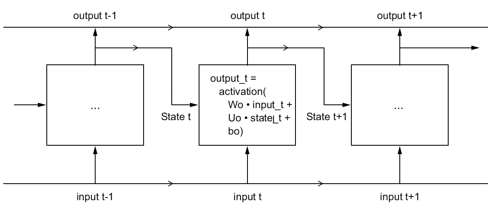

After fitting several time-series models to both monthly as well as yearly aggregated terrorist attacks data and financial data in the previous sections, we will now focus on the efficacy of Deep Learning models in helping us predict the monthly number of terrorist attacks, the same univariate time-series data employed in the ARMA/ARIMA/SARIMA section. We shall employ popular Recurrent Neural Networks (RNNs), including a Dense RNN, a Gated Recurrent Unit (GRU), and a Long Short-Term Memory Network (LSTM), with and without L2 regularization, a method to curb overfitting by forcing the weights of the parameters to decay towards zero, to predict the number number of terrorist attacks per month in the future. Doing so will help us compare not only the performance of the three RNNs, but also the performance of the three RNNs to that of the traditional univariate time-series models, ARIMA and SARIMA. Lastly, we shall discuss the effect of regularization on the results of our RNNs, assess how far into the future the RNNs can accurately predict the future, and compare the results of the trained deep learning models to the traditional single-variable time-series ARMA/ARIMA models.
To train these models, we use Python’s Keras library, a wrapper for Tensorflow and take inspiration from Francois Chollet’s Deep Learning in Python, Second Edition, Book (Chollet 2021). Visualizations of the architecture of a simple RNN and LSTM are shown below:

A simple RNN, unrolled over time
Anatomy of an LSTM
Overall Training Parameter Methodology
These are the parameters that are used to define and train the models:
recurrent_hidden_units: This is the number of recurrent hidden units in the Simple RNN layer of the model. The more hidden units, the more complex the model can be and the more features it can potentially learn. However, increasing the number of hidden units also increases the number of parameters in the model and can lead to overfitting.
epochs: This is the number of times the model is trained on the entire training dataset. Each epoch consists of one forward pass and one backward pass through the model. The default value of 100 epochs is used for all models.
f_batch: This is the fraction of the training dataset that is used for each batch during training. Batches are used to update the model parameters more frequently and efficiently than training on the entire dataset at once. The value of f_batch is multiplied by the total number of samples in the training dataset to determine the batch size and we shall be using a default value of 20% or 0.2.
optimizer: This is the optimization algorithm used to update the model parameters during training. The RMSprop optimizer is a popular choice for deep learning tasks that involve recurrent neural networks. Other state-of-the-art optimizers include Adam and Nadam. RMSprop is used for all models.
validation_split: This is the fraction of the training dataset that is used for validation during training. The validation dataset is used to monitor the performance of the model during training and to prevent overfitting. A value of 0.2 for validation_split means that 20% of the training data will be held out for validation, and the remaining 80% will be used for training.
activation: This is the activation function used for the recurrent hidden units in the model. The vanishing gradient problem is the primary problem in RNNs. To ensure the gradients stay in the linear region of the activation function, we need a function whose second derivative can sustain for a long range before going to zero. tanh, as a result, satisfies these properties better than ReLU activation does. The Rectified Linear Unit (ReLU) activation function is unbounded on the positive side, meaning that its output can take any positive value. The hyperbolic tangent (tanh) activation function, however, is bounded both on the positive and negative sides. Note: Only for the Bidirectional LSTM model, we use ReLU activation for the recurrent hidden units.
Read in Data and Normalize
When working with Deep Learning models, it is advisable to scale our features to a range of values, for example 0-1 range (Chollet 2021). Even though our exercise focuses on univariate data, it is still imperative to normalize the monthly count of terrorist attacks. In general, it isn’t safe to feed into a neural network data that takes relatively large values or data that is heterogeneous. Doing so can trigger large gradient updates that will prevent the network from converging. To make learning easier for our network, the the univariate monthly number of attacks data should take small values. Typically, most values should be in the 0–1 range.
Essentially, advantages of normalizing the features include:
Prevents issues with vanishing or exploding gradients: When the input features to a neural network have very different scales, it can cause issues with the gradients during backpropagation. If some features have very large values and others have very small values, the gradients for the small features can become very small, or even zero, which can slow down or prevent the convergence of the optimization process.
Helps to optimize the model more efficiently: When the input features are normalized, it can help to improve the optimization process by ensuring that the gradients are more consistent across all of the features. This can help to prevent the optimization process from getting stuck in local minima and can lead to faster convergence.
Improves generalization: Normalizing the features can help to improve the generalization performance of the neural network by reducing the effects of outliers or extreme values in the input features. By scaling the features to a similar range, the neural network is less likely to overfit to extreme values in the training set and is more likely to generalize well to unseen data.
Code
# read in data and convert to numpy arraytrain = pd.read_csv("univariate_train.csv")test = pd.read_csv("univariate_test.csv")train_data = np.array(train.astype('float32'))test_data = np.array(test.astype('float32'))# normalize valuesscaler = MinMaxScaler(feature_range=(0, 1))train_data = scaler.fit_transform(train_data).flatten()test_data = scaler.fit_transform(test_data).flatten()print("Train Data Shape: ", train_data.shape)print("Test Data Shape: ", test_data.shape)
Train Data Shape: (587,)
Test Data Shape: (25,)
Code
# PREPARE THE INPUT X AND TARGET Ydef get_XY(dat, time_steps,plot_data_partition=False):global X_ind,X,Y_ind,Y #use for plotting later# INDICES OF TARGET ARRAY# Y_ind [ 12 24 36 48 ..]; print(np.arange(1,12,1)); exit() Y_ind = np.arange(time_steps, len(dat), time_steps);#print(Y_ind); exit() Y = dat[Y_ind]# PREPARE X rows_x =len(Y) X_ind=[*range(time_steps*rows_x)]del X_ind[::time_steps] #if time_steps=10 remove every 10th entry X = dat[X_ind];#PLOTif(plot_data_partition): plt.figure(figsize=(15, 6), dpi=80) plt.plot(Y_ind, Y,'o',X_ind, X,'-'); plt.show();#RESHAPE INTO KERAS FORMAT X1 = np.reshape(X, (rows_x, time_steps-1, 1))# print([*X_ind]); print(X1); print(X1.shape,Y.shape); exit()return X1, Y#PARTITION DATAp=10# simpilar to AR(p) given time_steps data points, predict time_steps+1 point (make prediction one month in future)testX, testY = get_XY(test_data, p)trainX, trainY = get_XY(train_data, p)print("testX shape:", testX.shape, "testY shape:", testY.shape)print("trainX shape:", trainX.shape, "trainY shape:", trainY.shape)print(type(trainX))
A recurrent neural network (RNN) processes sequences by iterating through the sequence elements and maintaining a state that contains information relative to what it has seen so far. In effect, an RNN is a type of neural network that has an internal loop. The state of the RNN is reset between processing two different, independent sequences (such as two samples in a batch), so we still consider one sequence to be a single data point: a single input to the network. What changes is that this data point is no longer processed in a single step; rather, the network internally loops over sequence elements. In summary, an RNN is a for loop that reuses quantities computed during the previous iteration of the loop, nothing more. (Chollet 2021)
Model and Training Parameters
The input to the model is a 3D tensor with shape (batch_size, timesteps, input_dim). The output of the RNN layer is fed into a Dense layer with a single output unit, which is used to generate a scalar output.
Code
#USER PARAMrecurrent_hidden_units=3epochs=100f_batch=0.2#fraction used for batch sizeoptimizer="RMSprop"validation_split=0.2
Create Simple RNN Model
Code
#CREATE MODELmodel = Sequential()model.add(SimpleRNN(recurrent_hidden_units,return_sequences=False,input_shape=(trainX.shape[1],trainX.shape[2]), activation='tanh') ) #NEED TO TAKE THE OUTPUT RNN AND CONVERT TO SCALAR model.add(Dense(units=1, activation='linear'))# COMPILE THE MODEL model.compile(loss='MeanSquaredError', optimizer=optimizer)model.summary()
Metal device set to: Apple M1 Pro
2023-05-10 18:48:08.896038: I tensorflow/core/common_runtime/pluggable_device/pluggable_device_factory.cc:305] Could not identify NUMA node of platform GPU ID 0, defaulting to 0. Your kernel may not have been built with NUMA support.
2023-05-10 18:48:08.896475: I tensorflow/core/common_runtime/pluggable_device/pluggable_device_factory.cc:271] Created TensorFlow device (/job:localhost/replica:0/task:0/device:GPU:0 with 0 MB memory) -> physical PluggableDevice (device: 0, name: METAL, pci bus id: <undefined>)
#TRAIN MODELhistory = model.fit(trainX, trainY, epochs=epochs, # how many times to go through the entire datasetbatch_size=int(f_batch*trainX.shape[0]), # 20% of training data as batch sizevalidation_split=validation_split, #use 20% of training data for validationverbose=0) #suppress messages
2023-05-10 18:48:09.942863: W tensorflow/core/platform/profile_utils/cpu_utils.cc:128] Failed to get CPU frequency: 0 Hz
2023-05-10 18:48:10.323341: I tensorflow/core/grappler/optimizers/custom_graph_optimizer_registry.cc:113] Plugin optimizer for device_type GPU is enabled.
2023-05-10 18:48:12.888176: I tensorflow/core/grappler/optimizers/custom_graph_optimizer_registry.cc:113] Plugin optimizer for device_type GPU is enabled.
The train RMSE (Root Mean Squared Error) outputted by the Simple RNN model is 0.08 and test RMSE is 0.36
The parity plot provides further evidence of the model’s accuracy and suggests that the model’s performance is better for smaller Y values, as the deviation from the line increases for larger Y values. This is likely due to the fact that the model is trained on a larger number of smaller Y values (the data contains a lot of 0 values), and thus is better at predicting smaller Y values. The Visualize Predictions plot shows that the model is able to predict the general trend of the data, and is able to predict the peaks and valleys of the data. The model does, to an extent, capture the seasonality of the data but not completely, implying overfitting! Let’s see if we can improve the model’s performance by adding L2 regularization.
Training and Evaluating a Simple RNN with L2 Regularization
Model and Training Parameters
Code
#USER PARAMrecurrent_hidden_units=3epochs=100f_batch=0.2#fraction used for batch sizeoptimizer="RMSprop"validation_split=0.2
Create Simple RNN Model With L2 Regularization
Code
#CREATE MODELmodel = Sequential()model.add(SimpleRNN(recurrent_hidden_units,return_sequences=False,input_shape=(trainX.shape[1],trainX.shape[2]), recurrent_regularizer=regularizers.L2(1e-2),activation='tanh') ) #NEED TO TAKE THE OUTPUT RNN AND CONVERT TO SCALAR model.add(Dense(units=1, activation='linear'))# COMPILE THE MODEL model.compile(loss='MeanSquaredError', optimizer=optimizer)model.summary()
#TRAIN MODELhistory = model.fit(trainX, trainY, epochs=epochs, # how many times to go through the entire datasetbatch_size=int(f_batch*trainX.shape[0]), # 20% of training data as batch sizevalidation_split=validation_split, #use 20% of training data for validationverbose=0) #suppress messages
2023-05-10 18:48:41.518529: I tensorflow/core/grappler/optimizers/custom_graph_optimizer_registry.cc:113] Plugin optimizer for device_type GPU is enabled.
2023-05-10 18:48:42.180872: I tensorflow/core/grappler/optimizers/custom_graph_optimizer_registry.cc:113] Plugin optimizer for device_type GPU is enabled.
With L2 Regularization (lambda = 0.01) added to the Simple RNN model, the Train RMSE remained constant at 0.08 but test RMSE decreased from 0.36 to 0.22.
I experimented with the number of epochs, trying 50 first, before arriving at 100. It seems that the regularization penalty was too strong relative to the capacity of the model, resulting in a higher RMSE when using the same number of epochs as before. However, when the number of epochs is reduced, the model had less time to overfit to the training data, and the regularization penalty was able to help the model generalize better.
Training and Evaluating a GRU with L2 Regularization
The GRU is very similar to LSTM—you can think of it as a slightly simpler, streamlined version of the LSTM architecture. It was introduced in 2014 by Cho et al. and have gained popularity in the last few years. GRU’s have become popular alternatives to LSTMs because they combine the forget and input gates into a single “update gate.” Therefore, it uses gating mechanisms to selectively update and reset the hidden state, allowing it to learn long-term dependencies more effectively. (Chollet 2021)
Model and Training Parameters
Code
#USER PARAMrecurrent_hidden_units=3epochs=100f_batch=0.2#fraction used for batch sizeoptimizer="RMSprop"validation_split=0.2
Create GRU Model With L2 Regularization
Code
#CREATE MODELmodel = Sequential()model.add(GRU(recurrent_hidden_units,return_sequences=False,input_shape=(trainX.shape[1],trainX.shape[2]), recurrent_regularizer=regularizers.L2(1e-2),activation='tanh') ) #NEED TO TAKE THE OUTPUT RNN AND CONVERT TO SCALAR model.add(Dense(units=1, activation='linear'))# COMPILE THE MODEL model.compile(loss='MeanSquaredError', optimizer=optimizer)model.summary()
#TRAIN MODELhistory = model.fit(trainX, trainY, epochs=epochs, # how many times to go through the entire datasetbatch_size=int(f_batch*trainX.shape[0]), # 20% of training data as batch sizevalidation_split=validation_split, #use 20% of training data for validationverbose=0) #suppress messages
2023-05-10 18:49:10.399327: I tensorflow/core/grappler/optimizers/custom_graph_optimizer_registry.cc:113] Plugin optimizer for device_type GPU is enabled.
2023-05-10 18:49:10.519176: I tensorflow/core/grappler/optimizers/custom_graph_optimizer_registry.cc:113] Plugin optimizer for device_type GPU is enabled.
2023-05-10 18:49:11.176897: I tensorflow/core/grappler/optimizers/custom_graph_optimizer_registry.cc:113] Plugin optimizer for device_type GPU is enabled.
2023-05-10 18:49:13.188908: I tensorflow/core/grappler/optimizers/custom_graph_optimizer_registry.cc:113] Plugin optimizer for device_type GPU is enabled.
2023-05-10 18:49:13.230694: I tensorflow/core/grappler/optimizers/custom_graph_optimizer_registry.cc:113] Plugin optimizer for device_type GPU is enabled.
The GRU with L2 Regularization performs better, as observed by its Train RMSE of 0.04 and test RMSE of 0.18, a slight drop from that of the Simple RNN models.
Although this is a good sign that a more complex model performs better, the prediction plot remains fairly similar compared to those of the RNN models. Let’s try a Bidirectional GRU model, keeping the same number of epochs (100), to see if we can further improve the model’s performance.
Training and Evaluating a Bidirectional GRU
Model and Training Parameters
Code
#USER PARAMrecurrent_hidden_units=3epochs=100f_batch=0.2#fraction used for batch sizeoptimizer="RMSprop"validation_split=0.2
Create Bidirectional GRU
Code
#CREATE MODELmodel = Sequential()model.add(Bidirectional(GRU(recurrent_hidden_units,return_sequences=False,input_shape=(trainX.shape[1],trainX.shape[2]), activation='tanh') )) #NEED TO TAKE THE OUTPUT RNN AND CONVERT TO SCALAR model.add(Dense(units=1, activation='linear'))# BUILD THE MODEL model.build(input_shape=(None, trainX.shape[1], trainX.shape[2]))# COMPILE THE MODEL model.compile(loss='MeanSquaredError', optimizer=optimizer)model.summary()
#TRAIN MODELhistory = model.fit(trainX, trainY, epochs=epochs, # how many times to go through the entire datasetbatch_size=int(f_batch*trainX.shape[0]), # 20% of training data as batch sizevalidation_split=validation_split, #use 20% of training data for validationverbose=0) #suppress messages
2023-05-10 18:49:22.931618: I tensorflow/core/grappler/optimizers/custom_graph_optimizer_registry.cc:113] Plugin optimizer for device_type GPU is enabled.
2023-05-10 18:49:23.128454: I tensorflow/core/grappler/optimizers/custom_graph_optimizer_registry.cc:113] Plugin optimizer for device_type GPU is enabled.
2023-05-10 18:49:23.136937: I tensorflow/core/grappler/optimizers/custom_graph_optimizer_registry.cc:113] Plugin optimizer for device_type GPU is enabled.
2023-05-10 18:49:23.370995: I tensorflow/core/grappler/optimizers/custom_graph_optimizer_registry.cc:113] Plugin optimizer for device_type GPU is enabled.
2023-05-10 18:49:23.384101: I tensorflow/core/grappler/optimizers/custom_graph_optimizer_registry.cc:113] Plugin optimizer for device_type GPU is enabled.
2023-05-10 18:49:24.014885: I tensorflow/core/grappler/optimizers/custom_graph_optimizer_registry.cc:113] Plugin optimizer for device_type GPU is enabled.
2023-05-10 18:49:24.070711: I tensorflow/core/grappler/optimizers/custom_graph_optimizer_registry.cc:113] Plugin optimizer for device_type GPU is enabled.
2023-05-10 18:49:24.077214: I tensorflow/core/grappler/optimizers/custom_graph_optimizer_registry.cc:113] Plugin optimizer for device_type GPU is enabled.
The Bidirectional GRU with no regularization performs worse than not only the GRU with L2 Regularization but also the Simple RNN models! Its Train RMSE of 0.04 and test RMSE of 0.21 are worse than the previous 3 models tested. This is likely due to the fact that the Bidirectional GRU is a more complex model and thus requires more regularization to prevent overfitting. Let’s introduce regularization again, but this time with a Stacked Bidirectional GRU.
Training and Evaluating a Stacked Bidirectional GRU with L2 Regularization
Model and Training Parameters
Code
#USER PARAMrecurrent_hidden_units=3epochs=100f_batch=0.2#fraction used for batch sizeoptimizer="RMSprop"validation_split=0.2callback = EarlyStopping(monitor='loss', patience=3) # This callback will stop the training when there is no improvement in the loss for three consecutive epochs
Create Stacked Bidirectional GRU with L2 Regularization
Code
model = Sequential()model.add(Bidirectional(GRU(recurrent_hidden_units, return_sequences=True,input_shape=(trainX.shape[1],trainX.shape[2])) )) model.add(Bidirectional(GRU(recurrent_hidden_units,recurrent_regularizer=regularizers.L2(1e-2),activation='relu') )) #NEED TO TAKE THE OUTPUT RNN AND CONVERT TO SCALAR model.add(Dense(units=1, activation='linear'))# BUILD THE MODEL model.build(input_shape=(None, trainX.shape[1], trainX.shape[2]))# COMPILE THE MODEL model.compile(loss='MeanSquaredError', optimizer=optimizer)model.summary()
WARNING:tensorflow:Layer gru_3 will not use cuDNN kernels since it doesn't meet the criteria. It will use a generic GPU kernel as fallback when running on GPU.
WARNING:tensorflow:Layer gru_3 will not use cuDNN kernels since it doesn't meet the criteria. It will use a generic GPU kernel as fallback when running on GPU.
WARNING:tensorflow:Layer gru_3 will not use cuDNN kernels since it doesn't meet the criteria. It will use a generic GPU kernel as fallback when running on GPU.
#TRAIN MODELhistory = model.fit(trainX, trainY, epochs=epochs, # how many times to go through the entire datasetbatch_size=int(f_batch*trainX.shape[0]), # 20% of training data as batch sizevalidation_split=validation_split, #use 20% of training data for validationcallbacks=[callback], #early stoppingverbose=0) #suppress messages
2023-05-10 18:49:38.809866: I tensorflow/core/grappler/optimizers/custom_graph_optimizer_registry.cc:113] Plugin optimizer for device_type GPU is enabled.
2023-05-10 18:49:39.284167: I tensorflow/core/grappler/optimizers/custom_graph_optimizer_registry.cc:113] Plugin optimizer for device_type GPU is enabled.
2023-05-10 18:49:39.294308: I tensorflow/core/grappler/optimizers/custom_graph_optimizer_registry.cc:113] Plugin optimizer for device_type GPU is enabled.
2023-05-10 18:49:40.568910: I tensorflow/core/grappler/optimizers/custom_graph_optimizer_registry.cc:113] Plugin optimizer for device_type GPU is enabled.
2023-05-10 18:49:40.581766: I tensorflow/core/grappler/optimizers/custom_graph_optimizer_registry.cc:113] Plugin optimizer for device_type GPU is enabled.
2023-05-10 18:49:42.968524: I tensorflow/core/grappler/optimizers/custom_graph_optimizer_registry.cc:113] Plugin optimizer for device_type GPU is enabled.
2023-05-10 18:49:43.079910: I tensorflow/core/grappler/optimizers/custom_graph_optimizer_registry.cc:113] Plugin optimizer for device_type GPU is enabled.
2023-05-10 18:49:43.086392: I tensorflow/core/grappler/optimizers/custom_graph_optimizer_registry.cc:113] Plugin optimizer for device_type GPU is enabled.
WARNING:tensorflow:5 out of the last 13 calls to <function Model.make_predict_function.<locals>.predict_function at 0x2c7a5f1c0> triggered tf.function retracing. Tracing is expensive and the excessive number of tracings could be due to (1) creating @tf.function repeatedly in a loop, (2) passing tensors with different shapes, (3) passing Python objects instead of tensors. For (1), please define your @tf.function outside of the loop. For (2), @tf.function has reduce_retracing=True option that can avoid unnecessary retracing. For (3), please refer to https://www.tensorflow.org/guide/function#controlling_retracing and https://www.tensorflow.org/api_docs/python/tf/function for more details.
When using the Stacked Bidirectional GRU, it is imperative to add return_sequences=True to stack recurrent layers on top of each other in Keras. All intermediate layers should return their full sequence of outputs (a rank-3 tensor) rather than their output at the last timestep.
The output of this model is the worst out of all models so far, given its train RMSE of 0.04 and test RMSE of 0.26. Therefore, the best GRU model for predicting number of terorrist attacks in the US is the GRU model with L2 Regularization.
Training and Evaluating a Bidirectional LSTM
Model and Training Parameters
Code
#USER PARAMrecurrent_hidden_units=3epochs=100f_batch=0.2#fraction used for batch sizeoptimizer="RMSprop"validation_split=0.2callback = EarlyStopping(monitor='loss', patience=3) # This callback will stop the training when there is no improvement in the loss for three consecutive epochs
Create Bidirectional LSTM
Code
model = Sequential()model.add(Bidirectional(LSTM(recurrent_hidden_units,return_sequences=False,input_shape=(trainX.shape[1],trainX.shape[2]),activation='tanh') )) #NEED TO TAKE THE OUTPUT RNN AND CONVERT TO SCALAR model.add(Dense(units=1, activation='linear'))# BUILD THE MODEL model.build(input_shape=(None, trainX.shape[1], trainX.shape[2]))# COMPILE THE MODEL model.compile(loss='MeanSquaredError', optimizer=optimizer)model.summary()
#TRAIN MODELhistory = model.fit(trainX, trainY, epochs=epochs, # how many times to go through the entire datasetbatch_size=int(f_batch*trainX.shape[0]), # 20% of training data as batch sizevalidation_split=validation_split, #use 20% of training data for validationcallbacks=[callback], #early stoppingverbose=0) #suppress messages
2023-05-10 18:52:21.678310: I tensorflow/core/grappler/optimizers/custom_graph_optimizer_registry.cc:113] Plugin optimizer for device_type GPU is enabled.
2023-05-10 18:52:21.872873: I tensorflow/core/grappler/optimizers/custom_graph_optimizer_registry.cc:113] Plugin optimizer for device_type GPU is enabled.
2023-05-10 18:52:21.883274: I tensorflow/core/grappler/optimizers/custom_graph_optimizer_registry.cc:113] Plugin optimizer for device_type GPU is enabled.
2023-05-10 18:52:22.880704: I tensorflow/core/grappler/optimizers/custom_graph_optimizer_registry.cc:113] Plugin optimizer for device_type GPU is enabled.
2023-05-10 18:52:22.895576: I tensorflow/core/grappler/optimizers/custom_graph_optimizer_registry.cc:113] Plugin optimizer for device_type GPU is enabled.
2023-05-10 18:52:24.561378: I tensorflow/core/grappler/optimizers/custom_graph_optimizer_registry.cc:113] Plugin optimizer for device_type GPU is enabled.
2023-05-10 18:52:24.622381: I tensorflow/core/grappler/optimizers/custom_graph_optimizer_registry.cc:113] Plugin optimizer for device_type GPU is enabled.
2023-05-10 18:52:24.629700: I tensorflow/core/grappler/optimizers/custom_graph_optimizer_registry.cc:113] Plugin optimizer for device_type GPU is enabled.
WARNING:tensorflow:5 out of the last 13 calls to <function Model.make_predict_function.<locals>.predict_function at 0x16be91bd0> triggered tf.function retracing. Tracing is expensive and the excessive number of tracings could be due to (1) creating @tf.function repeatedly in a loop, (2) passing tensors with different shapes, (3) passing Python objects instead of tensors. For (1), please define your @tf.function outside of the loop. For (2), @tf.function has reduce_retracing=True option that can avoid unnecessary retracing. For (3), please refer to https://www.tensorflow.org/guide/function#controlling_retracing and https://www.tensorflow.org/api_docs/python/tf/function for more details.
The Bidirectional LSTM with no regularization performs better than the Stacked GRU with L2 regularization, but worse than both the Bidirectional GRU and the GRU with L2 regularization. The train RMSE of this Bidirectional LSTM is 0.04 and test RMSE is 0.22. The LSTM model, which is more complex than the GRU, is likely overfitting the data. The GRU model with L2 regularization is the best model so far. Let’s see if we can improve the performance of the Bidirectional LSTM with L2 regularization by tuning the hyperparameters.
Training and Evaluating a Bidirectional LSTM with L2 Regularization
Model and Training Parameters
Code
#USER PARAMrecurrent_hidden_units=3epochs=100f_batch=0.2#fraction used for batch sizeoptimizer="RMSprop"validation_split=0.2callback = EarlyStopping(monitor='loss', patience=3) # This callback will stop the training when there is no improvement in the loss for three consecutive epochs
Create Bidirectional LSTM with L2 Regularization
Code
model = Sequential()model.add(Bidirectional(LSTM(recurrent_hidden_units,return_sequences=False,input_shape=(trainX.shape[1],trainX.shape[2]),recurrent_regularizer=regularizers.L2(1e-2),activation='tanh') )) #NEED TO TAKE THE OUTPUT RNN AND CONVERT TO SCALAR model.add(Dense(units=1, activation='linear'))# BUILD THE MODEL model.build(input_shape=(None, trainX.shape[1], trainX.shape[2]))# COMPILE THE MODEL model.compile(loss='MeanSquaredError', optimizer=optimizer)model.summary()
#TRAIN MODELhistory = model.fit(trainX, trainY, epochs=epochs, # how many times to go through the entire datasetbatch_size=int(f_batch*trainX.shape[0]), # 20% of training data as batch sizevalidation_split=validation_split, #use 20% of training data for validationcallbacks=[callback], #early stoppingverbose=0) #suppress messages
2023-05-10 18:52:32.149248: I tensorflow/core/grappler/optimizers/custom_graph_optimizer_registry.cc:113] Plugin optimizer for device_type GPU is enabled.
2023-05-10 18:52:32.373302: I tensorflow/core/grappler/optimizers/custom_graph_optimizer_registry.cc:113] Plugin optimizer for device_type GPU is enabled.
2023-05-10 18:52:32.384588: I tensorflow/core/grappler/optimizers/custom_graph_optimizer_registry.cc:113] Plugin optimizer for device_type GPU is enabled.
2023-05-10 18:52:32.530447: I tensorflow/core/grappler/optimizers/custom_graph_optimizer_registry.cc:113] Plugin optimizer for device_type GPU is enabled.
2023-05-10 18:52:32.544122: I tensorflow/core/grappler/optimizers/custom_graph_optimizer_registry.cc:113] Plugin optimizer for device_type GPU is enabled.
2023-05-10 18:52:33.385391: I tensorflow/core/grappler/optimizers/custom_graph_optimizer_registry.cc:113] Plugin optimizer for device_type GPU is enabled.
2023-05-10 18:52:33.465829: I tensorflow/core/grappler/optimizers/custom_graph_optimizer_registry.cc:113] Plugin optimizer for device_type GPU is enabled.
2023-05-10 18:52:33.473596: I tensorflow/core/grappler/optimizers/custom_graph_optimizer_registry.cc:113] Plugin optimizer for device_type GPU is enabled.
The Bidirectional LSTM with L2 Regularization outputted a train RMSE of 0.04 and test RMSE is 0.23. It performs worse than Bidirectional LSTM without L2 Regularization and significantly worse than the Simple RNN with L2 Regularization and the GRU with L2 Regularization. Now, we can conclude that the GRU with L2 Regularization is the best performing model. But, will it be the best when predicting the number of attacks for the next 5 years instead of 2 years as seen above? Let’s find out.
Final Results Table
Model
L2 Regularization
Train RMSE
Test RMSE
Simple RNN
No
0.08
0.36
Simple RNN
Yes
0.05
0.22
GRU
Yes
0.04
0.18
Bidirectional GRU
No
0.04
0.21
Stacked Bidirectional GRU
Yes
0.04
0.26
Bidirectional LSTM
No
0.04
0.22
Bidirectional LSTM
Yes
0.04
0.23
How Far Into The Future Can We Predict?
Up until this point, we assessed the models’ prediction power for 2 years. Now, we will assess the models’ prediction power for 5 years. For this exercise, we shall pick the best performing models (from the three unique models - Simple RNN, GRU, and Bidirectional LSTM), which include the following:
Wow, the LSTM model outputs the lowest RMSE when the size of the test set is increased! This is a very interesting result, and it is likely due to the fact that the LSTM model is better able to capture the seasonality of the data when testing for number of attacks after 2016. Therefore, when predicting more time steps in the future, the LSTM model is better able to generalize to unseen data and could be recommended for future use.
Comparison with ARIMA and SARIMA
From the ARMA/ARIMA/SARIMA section, we observed that both the ARIMA models, ARIMA(0,1,1) AND ARIMA(2,1,3), were subpar at forecasting the number of attacks for 2 years. The forecasting results of ARIMA are shown below:
The SARIMA model (ARIMA(0,1,1)(0,1,1)), on the other hand, was better able to capture both the seasonality and trend in the data, and was able to forecast the number of attacks for 2 years with a Train RMSE of 4.317518. Although this RMSE metric for SARIMA is significantly higher than those of all the Recurrent Neural Networks tested in this section, it should be noted that relatively simpler models, including SARIMA, are still powerful in forecasting the number of attacks for the next 3 years. Moreover, we also employed Seasonal Cross-Validation for 1 step ahead (RMSE = 7.41) and 12 steps ahead forecasting (MSE = 30). Although these results seem significantly worse than those of all the Recurrent Neural Networks tested in this section, it should be noted that the SARIMA model is still able to capture the seasonality and trend in the data. Therefore, it can help us strike the balance between predictive power, interpretability, and computational efficiency. The forecasting results of SARIMA are shown below:
A major limitation for this section was the amount of data inputted to each model. It is recommended to feed in enormous amounts of data to RNNs for them to learn better representations of the model and help “capture seasonality”, in our case. Elaborate hyper-parameter tuning methods, such as GridSearch CV, could also be utilized to fine-tune the performance of the model for better results.
Chollet, François. 2021. Deep Learning with Python, Second Edition. Manning Publications.
Source Code
---title: Deep Learning for Time Seriesformat: html: page-layout: full code-fold: show code-copy: true code-tools: true code-overflow: wrapbibliography: bibliography.bibjupyter: python3---# SummaryAfter fitting several time-series models to both monthly as well as yearly aggregated terrorist attacks data and financial data in the previous sections, we will now focus on the efficacy of Deep Learning models in helping us predict the monthly number of terrorist attacks, the same univariate time-series data employed in the [ARMA/ARIMA/SARIMA section](https://tegveerg.georgetown.domains/Time-Series-Project/ARMA-ARIMA-SARIMA.html). We shall employ popular Recurrent Neural Networks (RNNs), including a Dense RNN, a Gated Recurrent Unit (GRU), and a Long Short-Term Memory Network (LSTM), with and without L2 regularization, a method to curb overfitting by forcing the weights of the parameters to decay towards zero, to predict the number number of terrorist attacks per month in the future. Doing so will help us compare not only the performance of the three RNNs, but also the performance of the three RNNs to that of the traditional univariate time-series models, ARIMA and SARIMA. Lastly, we shall discuss the effect of regularization on the results of our RNNs, assess how far into the future the RNNs can accurately predict the future, and compare the results of the trained deep learning models to the traditional single-variable time-series ARMA/ARIMA models.To train these models, we use Python's *Keras* library, a wrapper for *Tensorflow* and take inspiration from Francois Chollet's Deep Learning in Python, Second Edition, Book [@chollet2021deep]. Visualizations of the architecture of a simple RNN and LSTM are shown below:<center><em>A simple RNN, unrolled over time</em></center>\ <center><em>Anatomy of an LSTM</em></center>\ # Overall Training Parameter MethodologyThese are the parameters that are used to define and train the models:1. `recurrent_hidden_units`: This is the number of recurrent hidden units in the Simple RNN layer of the model. The more hidden units, the more complex the model can be and the more features it can potentially learn. However, increasing the number of hidden units also increases the number of parameters in the model and can lead to overfitting.2. `epochs`: This is the number of times the model is trained on the entire training dataset. Each epoch consists of one forward pass and one backward pass through the model. The default value of 100 epochs is used for all models.3. `f_batch`: This is the fraction of the training dataset that is used for each batch during training. Batches are used to update the model parameters more frequently and efficiently than training on the entire dataset at once. The value of f_batch is multiplied by the total number of samples in the training dataset to determine the batch size and we shall be using a default value of 20% or 0.2.4. `optimizer`: This is the optimization algorithm used to update the model parameters during training. The RMSprop optimizer is a popular choice for deep learning tasks that involve recurrent neural networks. Other state-of-the-art optimizers include Adam and Nadam. RMSprop is used for all models.5. `validation_split`: This is the fraction of the training dataset that is used for validation during training. The validation dataset is used to monitor the performance of the model during training and to prevent overfitting. A value of 0.2 for validation_split means that 20% of the training data will be held out for validation, and the remaining 80% will be used for training.6. `activation`: This is the activation function used for the recurrent hidden units in the model. The vanishing gradient problem is the primary problem in RNNs. To ensure the gradients stay in the linear region of the activation function, we need a function whose second derivative can sustain for a long range before going to zero. `tanh`, as a result, satisfies these properties better than `ReLU` activation does. The Rectified Linear Unit (ReLU) activation function is unbounded on the positive side, meaning that its output can take any positive value. The hyperbolic tangent (tanh) activation function, however, is bounded both on the positive and negative sides. Note: Only for the Bidirectional LSTM model, we use `ReLU` activation for the recurrent hidden units.# Read in Data and NormalizeWhen working with Deep Learning models, it is advisable to scale our features to a range of values, for example 0-1 range [@chollet2021deep]. Even though our exercise focuses on univariate data, it is still imperative to normalize the monthly count of terrorist attacks. In general, it isn’t safe to feed into a neural network data that takes relatively large values or data that is heterogeneous. Doing so can trigger large gradient updates that will prevent the network from converging. To make learning easier for our network, the the univariate monthly number of attacks data should take small values. Typically, most values should be in the 0–1 range.Essentially, advantages of normalizing the features include:1. Prevents issues with vanishing or exploding gradients: When the input features to a neural network have very different scales, it can cause issues with the gradients during backpropagation. If some features have very large values and others have very small values, the gradients for the small features can become very small, or even zero, which can slow down or prevent the convergence of the optimization process. 2. Helps to optimize the model more efficiently: When the input features are normalized, it can help to improve the optimization process by ensuring that the gradients are more consistent across all of the features. This can help to prevent the optimization process from getting stuck in local minima and can lead to faster convergence.3. Improves generalization: Normalizing the features can help to improve the generalization performance of the neural network by reducing the effects of outliers or extreme values in the input features. By scaling the features to a similar range, the neural network is less likely to overfit to extreme values in the training set and is more likely to generalize well to unseen data.```{python}#| echo: false#| warning: false#| message: falseimport pandas as pdimport numpy as npimport matplotlib.pyplot as pltimport tensorflow as tffrom keras.models import Sequentialfrom keras.layers import SimpleRNN, Dense, LSTM, GRU, Bidirectionalfrom tensorflow.keras import regularizersfrom tensorflow.keras.callbacks import EarlyStoppingfrom tensorflow.keras.optimizers import RMSpropfrom sklearn.preprocessing import MinMaxScalerfrom sklearn.metrics import mean_squared_errorimport sysimport matplotlib.pyplot as pltimport randomimport warningswarnings.filterwarnings('ignore')random.seed(82716)``````{python}# read in data and convert to numpy arraytrain = pd.read_csv("univariate_train.csv")test = pd.read_csv("univariate_test.csv")train_data = np.array(train.astype('float32'))test_data = np.array(test.astype('float32'))# normalize valuesscaler = MinMaxScaler(feature_range=(0, 1))train_data = scaler.fit_transform(train_data).flatten()test_data = scaler.fit_transform(test_data).flatten()print("Train Data Shape: ", train_data.shape)print("Test Data Shape: ", test_data.shape)``````{python}#| echo: false#| warning: false#| message: false# utility function for producing loss (model result) visualizationsimport plotly.io as piopio.renderers.default ="plotly_mimetype+notebook_connected"import plotly.express as px# UTILITYdef plotly_line_plot(t, y, title="Plot", x_label="t: time (months)", y_label="y(t): Response variable"):# GENERATE PLOTLY FIGURE fig = px.line(x=t[0], y=y[0], title=title, render_mode='SVG') # ADD MOREfor i inrange(1, len(y)):iflen(t[i]) ==1: fig.add_scatter(x=t[i], y=y[i], name='Training'if i==1else'Validation')else: fig.add_scatter(x=t[i], y=y[i], mode='lines', name='Training'if i==1else'Validation') fig.update_layout( xaxis_title=x_label, yaxis_title=y_label, template="plotly_white", showlegend=True ) fig.show()``````{python}# PREPARE THE INPUT X AND TARGET Ydef get_XY(dat, time_steps,plot_data_partition=False):global X_ind,X,Y_ind,Y #use for plotting later# INDICES OF TARGET ARRAY# Y_ind [ 12 24 36 48 ..]; print(np.arange(1,12,1)); exit() Y_ind = np.arange(time_steps, len(dat), time_steps);#print(Y_ind); exit() Y = dat[Y_ind]# PREPARE X rows_x =len(Y) X_ind=[*range(time_steps*rows_x)]del X_ind[::time_steps] #if time_steps=10 remove every 10th entry X = dat[X_ind];#PLOTif(plot_data_partition): plt.figure(figsize=(15, 6), dpi=80) plt.plot(Y_ind, Y,'o',X_ind, X,'-'); plt.show();#RESHAPE INTO KERAS FORMAT X1 = np.reshape(X, (rows_x, time_steps-1, 1))# print([*X_ind]); print(X1); print(X1.shape,Y.shape); exit()return X1, Y#PARTITION DATAp=10# simpilar to AR(p) given time_steps data points, predict time_steps+1 point (make prediction one month in future)testX, testY = get_XY(test_data, p)trainX, trainY = get_XY(train_data, p)print("testX shape:", testX.shape, "testY shape:", testY.shape)print("trainX shape:", trainX.shape, "trainY shape:", trainY.shape)print(type(trainX))```# Training and Evaluating a Simple RNN A recurrent neural network (RNN) processes sequences by iterating through the sequence elements and maintaining a state that contains information relative to what it has seen so far. In effect, an RNN is a type of neural network that has an internal loop. The state of the RNN is reset between processing two different, independent sequences (such as two samples in a batch), so we still consider one sequence to be a single data point: a single input to the network. What changes is that this data point is no longer processed in a single step; rather, the network internally loops over sequence elements. In summary, an RNN is a for loop that reuses quantities computedduring the previous iteration of the loop, nothing more. [@chollet2021deep]## Model and Training ParametersThe input to the model is a 3D tensor with shape (batch_size, timesteps, input_dim). The output of the RNN layer is fed into a Dense layer with a single output unit, which is used to generate a scalar output. ```{python}#USER PARAMrecurrent_hidden_units=3epochs=100f_batch=0.2#fraction used for batch sizeoptimizer="RMSprop"validation_split=0.2```## Create Simple RNN Model```{python}#CREATE MODELmodel = Sequential()model.add(SimpleRNN(recurrent_hidden_units,return_sequences=False,input_shape=(trainX.shape[1],trainX.shape[2]), activation='tanh') ) #NEED TO TAKE THE OUTPUT RNN AND CONVERT TO SCALAR model.add(Dense(units=1, activation='linear'))# COMPILE THE MODEL model.compile(loss='MeanSquaredError', optimizer=optimizer)model.summary()```## Train Model and Visualize Performance```{python}#TRAIN MODELhistory = model.fit(trainX, trainY, epochs=epochs, # how many times to go through the entire datasetbatch_size=int(f_batch*trainX.shape[0]), # 20% of training data as batch sizevalidation_split=validation_split, #use 20% of training data for validationverbose=0) #suppress messages```:::panel-tabset## Visualize Fitting History```{python}#| echo: false#| warning: false#| message: false#HISTORY PLOTepochs_steps = [*range(0, len(history.history['loss']))]# MAKE PREDICTIONStrain_predict = model.predict(trainX).squeeze()unnormalized_train_predict = scaler.inverse_transform(train_predict.reshape(-1,1))test_predict = model.predict(testX).squeeze()unnormalized_test_predict = scaler.inverse_transform(test_predict.reshape(-1,1))#print(trainX.shape, train_predict.shape,trainY.shape,testX.shape, test_predict.shape,testY.shape)trainY_unnormalized = scaler.inverse_transform(trainY.reshape(-1,1))testY_unnormalized = scaler.inverse_transform(testY.reshape(-1,1))#COMPUTE RMSE#print(trainY.shape, train_predict.shape)train_rmse_1 = np.sqrt(mean_squared_error(trainY, train_predict))test_rmse_1 = np.sqrt(mean_squared_error(testY, test_predict))#print(np.mean((trainY-train_predict)**2.0))#print(np.mean((testY-test_predict)**2.0))print('Train MSE = %.5f RMSE = %.5f'% (train_rmse_1**2.0,train_rmse_1))print('Test MSE = %.5f RMSE = %.5f'% (test_rmse_1**2.0,test_rmse_1)) # PLOTLY PLOTplotly_line_plot([epochs_steps,epochs_steps],[history.history['loss'],history.history['val_loss']],title="Training Loss (Red) vs Validation Loss (Blue)",x_label="Number of Training Epochs",y_label="Loss (MSE)")```## Visualize Parity Plot (Unnormalized Data)```{python}#| echo: false#| warning: false#| message: false# GET DATA# GENERATE PLOTLY FIGUREfig = px.scatter(x=trainY_unnormalized.flatten(),y=unnormalized_train_predict.flatten(),height=600,width=800)fig.add_scatter(x=testY_unnormalized.flatten(),y=unnormalized_test_predict.flatten(),mode="markers")fig.add_scatter(x=trainY_unnormalized.flatten(),y=trainY_unnormalized.flatten(), mode='lines')fig.update_layout( xaxis_title="y_pred", yaxis_title="y_data", template="plotly_white", showlegend=False)fig.show()```## Visualize Predictions (Unnormalized Data)```{python}#| echo: false#| warning: false#| message: falsedef get_XY(dat, time_steps,plot_data_partition=False):global X_ind,X,Y_ind,Y #use for plotting later# INDICES OF TARGET ARRAY# Y_ind [ 12 24 36 48 ..]; print(np.arange(1,12,1)); exit() Y_ind = np.arange(time_steps, len(dat), time_steps);#print(Y_ind); exit() Y = dat[Y_ind]# PREPARE X rows_x =len(Y) X_ind=[*range(time_steps*rows_x)]del X_ind[::time_steps] #if time_steps=10 remove every 10th entry X = dat[X_ind];#PLOTif(plot_data_partition): plt.figure(figsize=(15, 6), dpi=80) plt.plot(Y_ind, Y,'o',X_ind, X,'-'); plt.show();#RESHAPE INTO KERAS FORMAT X1 = np.reshape(X, (rows_x, time_steps-1, 1))# print([*X_ind]); print(X1); print(X1.shape,Y.shape); exit()return X1, Y#PARTITION DATAp=10# simpilar to AR(p) given time_steps data points, predict time_steps+1 point (make prediction one month in future)testX, testY = get_XY(np.array(test.astype('float32')), p)trainX, trainY = get_XY(np.array(train.astype('float32')), p)# PLOT THE RESULTdef plot_result(trainY, testY, train_predict, test_predict): plt.figure(figsize=(15, 6), dpi=80)#ORIGINAL DATA#print(X.shape,Y.shape) plt.plot(Y_ind, Y,'o', label='target') plt.plot(X_ind, X,'.', label='training points'); plt.plot(Y_ind, unnormalized_train_predict,'r.', label='prediction'); plt.plot(Y_ind, unnormalized_train_predict,'-'); plt.legend() plt.xlabel('Observation number after given time steps') plt.ylabel('Number of attacks') plt.title('Actual vs Predicted Values') plt.show()plot_result(trainY_unnormalized, testY_unnormalized, unnormalized_train_predict, unnormalized_test_predict)```:::## Discussion```{python}#| echo: false#| warning: false#| message: falsefrom IPython.display import display, Markdowndisplay(Markdown(f"""The train RMSE (Root Mean Squared Error) outputted by the Simple RNN model is {train_rmse_1:.2f} and test RMSE is {test_rmse_1:.2f}"""))```The parity plot provides further evidence of the model's accuracy and suggests that the model's performance is better for smaller Y values, as the deviation from the line increases for larger Y values. This is likely due to the fact that the model is trained on a larger number of smaller Y values (the data contains a lot of 0 values), and thus is better at predicting smaller Y values. The *Visualize Predictions* plot shows that the model is able to predict the general trend of the data, and is able to predict the peaks and valleys of the data. The model does, to an extent, capture the seasonality of the data but not completely, implying overfitting! Let's see if we can improve the model's performance by adding L2 regularization.# Training and Evaluating a Simple RNN with L2 Regularization```{python}#| echo: false#| warning: false#| message: falsetrain = pd.read_csv("univariate_train.csv")test = pd.read_csv("univariate_test.csv")train_data = np.array(train.astype('float32'))test_data = np.array(test.astype('float32'))# normalize valuesscaler = MinMaxScaler(feature_range=(0, 1))train_data = scaler.fit_transform(train_data).flatten()test_data = scaler.fit_transform(test_data).flatten()#print(train_data.shape)#print(test_data.shape)def get_XY(dat, time_steps,plot_data_partition=False):global X_ind,X,Y_ind,Y #use for plotting later# INDICES OF TARGET ARRAY# Y_ind [ 12 24 36 48 ..]; print(np.arange(1,12,1)); exit() Y_ind = np.arange(time_steps, len(dat), time_steps);#print(Y_ind); exit() Y = dat[Y_ind]# PREPARE X rows_x =len(Y) X_ind=[*range(time_steps*rows_x)]del X_ind[::time_steps] #if time_steps=10 remove every 10th entry X = dat[X_ind];#PLOTif(plot_data_partition): plt.figure(figsize=(15, 6), dpi=80) plt.plot(Y_ind, Y,'o',X_ind, X,'-'); plt.show();#RESHAPE INTO KERAS FORMAT X1 = np.reshape(X, (rows_x, time_steps-1, 1))# print([*X_ind]); print(X1); print(X1.shape,Y.shape); exit()return X1, Y#PARTITION DATAp=10# simpilar to AR(p) given time_steps data points, predict time_steps+1 point (make prediction one month in future)testX, testY = get_XY(test_data, p)trainX, trainY = get_XY(train_data, p)```## Model and Training Parameters```{python}#USER PARAMrecurrent_hidden_units=3epochs=100f_batch=0.2#fraction used for batch sizeoptimizer="RMSprop"validation_split=0.2```## Create Simple RNN Model With L2 Regularization```{python}#CREATE MODELmodel = Sequential()model.add(SimpleRNN(recurrent_hidden_units,return_sequences=False,input_shape=(trainX.shape[1],trainX.shape[2]), recurrent_regularizer=regularizers.L2(1e-2),activation='tanh') ) #NEED TO TAKE THE OUTPUT RNN AND CONVERT TO SCALAR model.add(Dense(units=1, activation='linear'))# COMPILE THE MODEL model.compile(loss='MeanSquaredError', optimizer=optimizer)model.summary()```## Train Model and Visualize Performance```{python}#TRAIN MODELhistory = model.fit(trainX, trainY, epochs=epochs, # how many times to go through the entire datasetbatch_size=int(f_batch*trainX.shape[0]), # 20% of training data as batch sizevalidation_split=validation_split, #use 20% of training data for validationverbose=0) #suppress messages```:::panel-tabset## Visualize Fitting History```{python}#| echo: false#| warning: false#| message: false#HISTORY PLOTepochs_steps = [*range(0, len(history.history['loss']))]# MAKE PREDICTIONStrain_predict = model.predict(trainX).squeeze()unnormalized_train_predict = scaler.inverse_transform(train_predict.reshape(-1,1))test_predict = model.predict(testX).squeeze()unnormalized_test_predict = scaler.inverse_transform(test_predict.reshape(-1,1))#print(trainX.shape, train_predict.shape,trainY.shape,testX.shape, test_predict.shape,testY.shape)trainY_unnormalized = scaler.inverse_transform(trainY.reshape(-1,1))testY_unnormalized = scaler.inverse_transform(testY.reshape(-1,1))#COMPUTE RMSE#print(trainY.shape, train_predict.shape)train_rmse_2 = np.sqrt(mean_squared_error(trainY, train_predict))test_rmse_2 = np.sqrt(mean_squared_error(testY, test_predict))#print(np.mean((trainY-train_predict)**2.0))#print(np.mean((testY-test_predict)**2.0))print('Train MSE = %.5f RMSE = %.5f'% (train_rmse_2**2.0,train_rmse_2))print('Test MSE = %.5f RMSE = %.5f'% (test_rmse_2**2.0,test_rmse_2)) # PLOTLY PLOTplotly_line_plot([epochs_steps,epochs_steps],[history.history['loss'],history.history['val_loss']],title="Training Loss (Red) vs Validation Loss (Blue)",x_label="Number of Training Epochs",y_label="Loss (MSE)")```## Visualize Parity Plot (Unnormalized Data)```{python}#| echo: false#| warning: false#| message: false# GET DATA# GENERATE PLOTLY FIGUREfig = px.scatter(x=trainY_unnormalized.flatten(),y=unnormalized_train_predict.flatten(),height=600,width=800)fig.add_scatter(x=testY_unnormalized.flatten(),y=unnormalized_test_predict.flatten(),mode="markers")fig.add_scatter(x=trainY_unnormalized.flatten(),y=trainY_unnormalized.flatten(), mode='lines')fig.update_layout( xaxis_title="y_pred", yaxis_title="y_data", template="plotly_white", showlegend=False)fig.show()```## Visualize Predictions (Unnormalized Data)```{python}#| echo: false#| warning: false#| message: falsedef get_XY(dat, time_steps,plot_data_partition=False):global X_ind,X,Y_ind,Y #use for plotting later# INDICES OF TARGET ARRAY# Y_ind [ 12 24 36 48 ..]; print(np.arange(1,12,1)); exit() Y_ind = np.arange(time_steps, len(dat), time_steps);#print(Y_ind); exit() Y = dat[Y_ind]# PREPARE X rows_x =len(Y) X_ind=[*range(time_steps*rows_x)]del X_ind[::time_steps] #if time_steps=10 remove every 10th entry X = dat[X_ind];#PLOTif(plot_data_partition): plt.figure(figsize=(15, 6), dpi=80) plt.plot(Y_ind, Y,'o',X_ind, X,'-'); plt.show();#RESHAPE INTO KERAS FORMAT X1 = np.reshape(X, (rows_x, time_steps-1, 1))# print([*X_ind]); print(X1); print(X1.shape,Y.shape); exit()return X1, Y#PARTITION DATAp=10# simpilar to AR(p) given time_steps data points, predict time_steps+1 point (make prediction one month in future)testX, testY = get_XY(np.array(test.astype('float32')), p)trainX, trainY = get_XY(np.array(train.astype('float32')), p)def plot_result(trainY, testY, train_predict, test_predict): plt.figure(figsize=(15, 6), dpi=80)#ORIGINAL DATA#print(X.shape,Y.shape) plt.plot(Y_ind, Y,'o', label='target') plt.plot(X_ind, X,'.', label='training points'); plt.plot(Y_ind, unnormalized_train_predict,'r.', label='prediction'); plt.plot(Y_ind, unnormalized_train_predict,'-'); plt.legend() plt.xlabel('Observation number after given time steps') plt.ylabel('Number of attacks') plt.title('Actual vs Predicted Values') plt.show()plot_result(trainY_unnormalized, testY_unnormalized, unnormalized_train_predict, unnormalized_test_predict)```:::## Discussion```{python}#| echo: false#| warning: false#| message: falsefrom IPython.display import display, Markdowndisplay(Markdown(f"""With L2 Regularization (lambda = 0.01) added to the Simple RNN model, the Train RMSE remained constant at {train_rmse_1:.2f} but test RMSE decreased from {test_rmse_1:.2f} to {test_rmse_2:.2f}."""))```I experimented with the number of epochs, trying 50 first, before arriving at 100. It seems that the regularization penalty was too strong relative to the capacity of the model, resulting in a higher RMSE when using the same number of epochs as before. However, when the number of epochs is reduced, the model had less time to overfit to the training data, and the regularization penalty was able to help the model generalize better.# Training and Evaluating a GRU with L2 RegularizationThe GRU is very similar to LSTM—you can think of it as a slightly simpler, streamlined version of the LSTM architecture. It was introduced in 2014 by Cho et al. and have gained popularity in the last few years. GRU's have become popular alternatives to LSTMs because they combine the forget and input gates into a single “update gate.” Therefore, it uses gating mechanisms to selectively update and reset the hidden state, allowing it to learn long-term dependencies more effectively. [@chollet2021deep]```{python}#| echo: false#| warning: false#| message: falsetrain = pd.read_csv("univariate_train.csv")test = pd.read_csv("univariate_test.csv")train_data = np.array(train.astype('float32'))test_data = np.array(test.astype('float32'))# normalize valuesscaler = MinMaxScaler(feature_range=(0, 1))train_data = scaler.fit_transform(train_data).flatten()test_data = scaler.fit_transform(test_data).flatten()#print(train_data.shape)#print(test_data.shape)def get_XY(dat, time_steps,plot_data_partition=False):global X_ind,X,Y_ind,Y #use for plotting later# INDICES OF TARGET ARRAY# Y_ind [ 12 24 36 48 ..]; print(np.arange(1,12,1)); exit() Y_ind = np.arange(time_steps, len(dat), time_steps);#print(Y_ind); exit() Y = dat[Y_ind]# PREPARE X rows_x =len(Y) X_ind=[*range(time_steps*rows_x)]del X_ind[::time_steps] #if time_steps=10 remove every 10th entry X = dat[X_ind];#PLOTif(plot_data_partition): plt.figure(figsize=(15, 6), dpi=80) plt.plot(Y_ind, Y,'o',X_ind, X,'-'); plt.show();#RESHAPE INTO KERAS FORMAT X1 = np.reshape(X, (rows_x, time_steps-1, 1))# print([*X_ind]); print(X1); print(X1.shape,Y.shape); exit()return X1, Y#PARTITION DATAp=10# simpilar to AR(p) given time_steps data points, predict time_steps+1 point (make prediction one month in future)testX, testY = get_XY(test_data, p)trainX, trainY = get_XY(train_data, p)```## Model and Training Parameters```{python}#USER PARAMrecurrent_hidden_units=3epochs=100f_batch=0.2#fraction used for batch sizeoptimizer="RMSprop"validation_split=0.2```## Create GRU Model With L2 Regularization```{python}#CREATE MODELmodel = Sequential()model.add(GRU(recurrent_hidden_units,return_sequences=False,input_shape=(trainX.shape[1],trainX.shape[2]), recurrent_regularizer=regularizers.L2(1e-2),activation='tanh') ) #NEED TO TAKE THE OUTPUT RNN AND CONVERT TO SCALAR model.add(Dense(units=1, activation='linear'))# COMPILE THE MODEL model.compile(loss='MeanSquaredError', optimizer=optimizer)model.summary()```## Train Model and Visualize Performance```{python}#TRAIN MODELhistory = model.fit(trainX, trainY, epochs=epochs, # how many times to go through the entire datasetbatch_size=int(f_batch*trainX.shape[0]), # 20% of training data as batch sizevalidation_split=validation_split, #use 20% of training data for validationverbose=0) #suppress messages```:::panel-tabset## Visualize Fitting History```{python}#| echo: false#| warning: false#| message: false#HISTORY PLOTepochs_steps = [*range(0, len(history.history['loss']))]# MAKE PREDICTIONStrain_predict = model.predict(trainX).squeeze()unnormalized_train_predict = scaler.inverse_transform(train_predict.reshape(-1,1))test_predict = model.predict(testX).squeeze()unnormalized_test_predict = scaler.inverse_transform(test_predict.reshape(-1,1))#print(trainX.shape, train_predict.shape,trainY.shape,testX.shape, test_predict.shape,testY.shape)trainY_unnormalized = scaler.inverse_transform(trainY.reshape(-1,1))testY_unnormalized = scaler.inverse_transform(testY.reshape(-1,1))#COMPUTE RMSE#print(trainY.shape, train_predict.shape)train_rmse_3 = np.sqrt(mean_squared_error(trainY, train_predict))test_rmse_3 = np.sqrt(mean_squared_error(testY, test_predict))#print(np.mean((trainY-train_predict)**2.0))#print(np.mean((testY-test_predict)**2.0))print('Train MSE = %.5f RMSE = %.5f'% (train_rmse_3**2.0,train_rmse_3))print('Test MSE = %.5f RMSE = %.5f'% (test_rmse_3**2.0,test_rmse_3)) # PLOTLY PLOTplotly_line_plot([epochs_steps,epochs_steps],[history.history['loss'],history.history['val_loss']],title="Training Loss (Red) vs Validation Loss (Blue)",x_label="Number of Training Epochs",y_label="Loss (MSE)")```## Visualize Parity Plot (Unnormalized Data)```{python}#| echo: false#| warning: false#| message: false# GET DATA# GENERATE PLOTLY FIGUREfig = px.scatter(x=trainY_unnormalized.flatten(),y=unnormalized_train_predict.flatten(),height=600,width=800)fig.add_scatter(x=testY_unnormalized.flatten(),y=unnormalized_test_predict.flatten(),mode="markers")fig.add_scatter(x=trainY_unnormalized.flatten(),y=trainY_unnormalized.flatten(), mode='lines')fig.update_layout( xaxis_title="y_pred", yaxis_title="y_data", template="plotly_white", showlegend=False)fig.show()```## Visualize Predictions (Unnormalized Data)```{python}#| echo: false#| warning: false#| message: falsedef get_XY(dat, time_steps,plot_data_partition=False):global X_ind,X,Y_ind,Y #use for plotting later# INDICES OF TARGET ARRAY# Y_ind [ 12 24 36 48 ..]; print(np.arange(1,12,1)); exit() Y_ind = np.arange(time_steps, len(dat), time_steps);#print(Y_ind); exit() Y = dat[Y_ind]# PREPARE X rows_x =len(Y) X_ind=[*range(time_steps*rows_x)]del X_ind[::time_steps] #if time_steps=10 remove every 10th entry X = dat[X_ind];#PLOTif(plot_data_partition): plt.figure(figsize=(15, 6), dpi=80) plt.plot(Y_ind, Y,'o',X_ind, X,'-'); plt.show();#RESHAPE INTO KERAS FORMAT X1 = np.reshape(X, (rows_x, time_steps-1, 1))# print([*X_ind]); print(X1); print(X1.shape,Y.shape); exit()return X1, Y#PARTITION DATAp=10# simpilar to AR(p) given time_steps data points, predict time_steps+1 point (make prediction one month in future)testX, testY = get_XY(np.array(test.astype('float32')), p)trainX, trainY = get_XY(np.array(train.astype('float32')), p)def plot_result(trainY, testY, train_predict, test_predict): plt.figure(figsize=(15, 6), dpi=80)#ORIGINAL DATA#print(X.shape,Y.shape) plt.plot(Y_ind, Y,'o', label='target') plt.plot(X_ind, X,'.', label='training points'); plt.plot(Y_ind, unnormalized_train_predict,'r.', label='prediction'); plt.plot(Y_ind, unnormalized_train_predict,'-'); plt.legend() plt.xlabel('Observation number after given time steps') plt.ylabel('Number of attacks') plt.title('Actual vs Predicted Values') plt.show()plot_result(trainY_unnormalized, testY_unnormalized, unnormalized_train_predict, unnormalized_test_predict)```:::## Discussion```{python}#| echo: false#| warning: false#| message: falsefrom IPython.display import display, Markdowndisplay(Markdown(f"""The GRU with L2 Regularization performs better, as observed by its Train RMSE of {train_rmse_3:.2f} and test RMSE of {test_rmse_3:.2f}, a slight drop from that of the Simple RNN models."""))```Although this is a good sign that a more complex model performs better, the prediction plot remains fairly similar compared to those of the RNN models. Let's try a Bidirectional GRU model, keeping the same number of epochs (100), to see if we can further improve the model's performance.# Training and Evaluating a Bidirectional GRU ```{python}#| echo: false#| warning: false#| message: falsetrain = pd.read_csv("univariate_train.csv")test = pd.read_csv("univariate_test.csv")train_data = np.array(train.astype('float32'))test_data = np.array(test.astype('float32'))# normalize valuesscaler = MinMaxScaler(feature_range=(0, 1))train_data = scaler.fit_transform(train_data).flatten()test_data = scaler.fit_transform(test_data).flatten()#print(train_data.shape)#print(test_data.shape)def get_XY(dat, time_steps,plot_data_partition=False):global X_ind,X,Y_ind,Y #use for plotting later# INDICES OF TARGET ARRAY# Y_ind [ 12 24 36 48 ..]; print(np.arange(1,12,1)); exit() Y_ind = np.arange(time_steps, len(dat), time_steps);#print(Y_ind); exit() Y = dat[Y_ind]# PREPARE X rows_x =len(Y) X_ind=[*range(time_steps*rows_x)]del X_ind[::time_steps] #if time_steps=10 remove every 10th entry X = dat[X_ind];#PLOTif(plot_data_partition): plt.figure(figsize=(15, 6), dpi=80) plt.plot(Y_ind, Y,'o',X_ind, X,'-'); plt.show();#RESHAPE INTO KERAS FORMAT X1 = np.reshape(X, (rows_x, time_steps-1, 1))# print([*X_ind]); print(X1); print(X1.shape,Y.shape); exit()return X1, Y#PARTITION DATAp=10# simpilar to AR(p) given time_steps data points, predict time_steps+1 point (make prediction one month in future)testX, testY = get_XY(test_data, p)trainX, trainY = get_XY(train_data, p)```## Model and Training Parameters```{python}#USER PARAMrecurrent_hidden_units=3epochs=100f_batch=0.2#fraction used for batch sizeoptimizer="RMSprop"validation_split=0.2```## Create Bidirectional GRU```{python}#CREATE MODELmodel = Sequential()model.add(Bidirectional(GRU(recurrent_hidden_units,return_sequences=False,input_shape=(trainX.shape[1],trainX.shape[2]), activation='tanh') )) #NEED TO TAKE THE OUTPUT RNN AND CONVERT TO SCALAR model.add(Dense(units=1, activation='linear'))# BUILD THE MODEL model.build(input_shape=(None, trainX.shape[1], trainX.shape[2]))# COMPILE THE MODEL model.compile(loss='MeanSquaredError', optimizer=optimizer)model.summary()```## Train Model and Visualize Performance```{python}#TRAIN MODELhistory = model.fit(trainX, trainY, epochs=epochs, # how many times to go through the entire datasetbatch_size=int(f_batch*trainX.shape[0]), # 20% of training data as batch sizevalidation_split=validation_split, #use 20% of training data for validationverbose=0) #suppress messages```:::panel-tabset## Visualize Fitting History```{python}#| echo: false#| warning: false#| message: false#HISTORY PLOTepochs_steps = [*range(0, len(history.history['loss']))]## MAKE PREDICTIONStrain_predict = model.predict(trainX).squeeze()unnormalized_train_predict = scaler.inverse_transform(train_predict.reshape(-1,1))test_predict = model.predict(testX).squeeze()unnormalized_test_predict = scaler.inverse_transform(test_predict.reshape(-1,1))#print(trainX.shape, train_predict.shape,trainY.shape,testX.shape, test_predict.shape,testY.shape)trainY_unnormalized = scaler.inverse_transform(trainY.reshape(-1,1))testY_unnormalized = scaler.inverse_transform(testY.reshape(-1,1))#COMPUTE RMSE#print(trainY.shape, train_predict.shape)train_rmse_4 = np.sqrt(mean_squared_error(trainY, train_predict))test_rmse_4 = np.sqrt(mean_squared_error(testY, test_predict))#print(np.mean((trainY-train_predict)**2.0))#print(np.mean((testY-test_predict)**2.0))print('Train MSE = %.5f RMSE = %.5f'% (train_rmse_4**2.0,train_rmse_4))print('Test MSE = %.5f RMSE = %.5f'% (test_rmse_4**2.0,test_rmse_4)) # PLOTLY PLOTplotly_line_plot([epochs_steps,epochs_steps],[history.history['loss'],history.history['val_loss']],title="Training Loss (Red) vs Validation Loss (Blue)",x_label="Number of Training Epochs",y_label="Loss (MSE)")```## Visualize Parity Plot (Unnormalized Data)```{python}#| echo: false#| warning: false#| message: false# GET DATA# GENERATE PLOTLY FIGUREfig = px.scatter(x=trainY_unnormalized.flatten(),y=unnormalized_train_predict.flatten(),height=600,width=800)fig.add_scatter(x=testY_unnormalized.flatten(),y=unnormalized_test_predict.flatten(),mode="markers")fig.add_scatter(x=trainY_unnormalized.flatten(),y=trainY_unnormalized.flatten(), mode='lines')fig.update_layout( xaxis_title="y_pred", yaxis_title="y_data", template="plotly_white", showlegend=False)fig.show()```## Visualize Predictions (Unnormalized Data)```{python}#| echo: false#| warning: false#| message: falsedef get_XY(dat, time_steps,plot_data_partition=False):global X_ind,X,Y_ind,Y #use for plotting later# INDICES OF TARGET ARRAY# Y_ind [ 12 24 36 48 ..]; print(np.arange(1,12,1)); exit() Y_ind = np.arange(time_steps, len(dat), time_steps);#print(Y_ind); exit() Y = dat[Y_ind]# PREPARE X rows_x =len(Y) X_ind=[*range(time_steps*rows_x)]del X_ind[::time_steps] #if time_steps=10 remove every 10th entry X = dat[X_ind];#PLOTif(plot_data_partition): plt.figure(figsize=(15, 6), dpi=80) plt.plot(Y_ind, Y,'o',X_ind, X,'-'); plt.show();#RESHAPE INTO KERAS FORMAT X1 = np.reshape(X, (rows_x, time_steps-1, 1))# print([*X_ind]); print(X1); print(X1.shape,Y.shape); exit()return X1, Y#PARTITION DATAp=10# simpilar to AR(p) given time_steps data points, predict time_steps+1 point (make prediction one month in future)testX, testY = get_XY(np.array(test.astype('float32')), p)trainX, trainY = get_XY(np.array(train.astype('float32')), p)def plot_result(trainY, testY, train_predict, test_predict): plt.figure(figsize=(15, 6), dpi=80)#ORIGINAL DATA#print(X.shape,Y.shape) plt.plot(Y_ind, Y,'o', label='target') plt.plot(X_ind, X,'.', label='training points'); plt.plot(Y_ind, unnormalized_train_predict,'r.', label='prediction'); plt.plot(Y_ind, unnormalized_train_predict,'-'); plt.legend() plt.xlabel('Observation number after given time steps') plt.ylabel('Number of attacks') plt.title('Actual vs Predicted Values') plt.show()plot_result(trainY_unnormalized, testY_unnormalized, unnormalized_train_predict, unnormalized_test_predict)```:::## Discussion```{python}#| echo: false#| warning: false#| message: falsefrom IPython.display import display, Markdowndisplay(Markdown(f"""The Bidirectional GRU with no regularization performs worse than not only the GRU with L2 Regularization but also the Simple RNN models! Its Train RMSE of {train_rmse_4:.2f} and test RMSE of {test_rmse_4:.2f} are worse than the previous 3 models tested. This is likely due to the fact that the Bidirectional GRU is a more complex model and thus requires more regularization to prevent overfitting. Let's introduce regularization again, but this time with a Stacked Bidirectional GRU."""))```# Training and Evaluating a Stacked Bidirectional GRU with L2 Regularization```{python}#| echo: false#| warning: false#| message: falsetrain = pd.read_csv("univariate_train.csv")test = pd.read_csv("univariate_test.csv")train_data = np.array(train.astype('float32'))test_data = np.array(test.astype('float32'))# normalize valuesscaler = MinMaxScaler(feature_range=(0, 1))train_data = scaler.fit_transform(train_data).flatten()test_data = scaler.fit_transform(test_data).flatten()#print(train_data.shape)#print(test_data.shape)def get_XY(dat, time_steps,plot_data_partition=False):global X_ind,X,Y_ind,Y #use for plotting later# INDICES OF TARGET ARRAY# Y_ind [ 12 24 36 48 ..]; print(np.arange(1,12,1)); exit() Y_ind = np.arange(time_steps, len(dat), time_steps);#print(Y_ind); exit() Y = dat[Y_ind]# PREPARE X rows_x =len(Y) X_ind=[*range(time_steps*rows_x)]del X_ind[::time_steps] #if time_steps=10 remove every 10th entry X = dat[X_ind];#PLOTif(plot_data_partition): plt.figure(figsize=(15, 6), dpi=80) plt.plot(Y_ind, Y,'o',X_ind, X,'-'); plt.show();#RESHAPE INTO KERAS FORMAT X1 = np.reshape(X, (rows_x, time_steps-1, 1))# print([*X_ind]); print(X1); print(X1.shape,Y.shape); exit()return X1, Y#PARTITION DATAp=10# simpilar to AR(p) given time_steps data points, predict time_steps+1 point (make prediction one month in future)testX, testY = get_XY(test_data, p)trainX, trainY = get_XY(train_data, p)```## Model and Training Parameters```{python}#USER PARAMrecurrent_hidden_units=3epochs=100f_batch=0.2#fraction used for batch sizeoptimizer="RMSprop"validation_split=0.2callback = EarlyStopping(monitor='loss', patience=3) # This callback will stop the training when there is no improvement in the loss for three consecutive epochs```## Create Stacked Bidirectional GRU with L2 Regularization```{python}model = Sequential()model.add(Bidirectional(GRU(recurrent_hidden_units, return_sequences=True,input_shape=(trainX.shape[1],trainX.shape[2])) )) model.add(Bidirectional(GRU(recurrent_hidden_units,recurrent_regularizer=regularizers.L2(1e-2),activation='relu') )) #NEED TO TAKE THE OUTPUT RNN AND CONVERT TO SCALAR model.add(Dense(units=1, activation='linear'))# BUILD THE MODEL model.build(input_shape=(None, trainX.shape[1], trainX.shape[2]))# COMPILE THE MODEL model.compile(loss='MeanSquaredError', optimizer=optimizer)model.summary()```## Train Model and Visualize Performance```{python}#TRAIN MODELhistory = model.fit(trainX, trainY, epochs=epochs, # how many times to go through the entire datasetbatch_size=int(f_batch*trainX.shape[0]), # 20% of training data as batch sizevalidation_split=validation_split, #use 20% of training data for validationcallbacks=[callback], #early stoppingverbose=0) #suppress messages```:::panel-tabset## Visualize Fitting History```{python}#| echo: false#| warning: false#| message: false#HISTORY PLOTepochs_steps = [*range(0, len(history.history['loss']))]# MAKE PREDICTIONStrain_predict = model.predict(trainX).squeeze()unnormalized_train_predict = scaler.inverse_transform(train_predict.reshape(-1,1))test_predict = model.predict(testX).squeeze()unnormalized_test_predict = scaler.inverse_transform(test_predict.reshape(-1,1))#print(trainX.shape, train_predict.shape,trainY.shape,testX.shape, test_predict.shape,testY.shape)trainY_unnormalized = scaler.inverse_transform(trainY.reshape(-1,1))testY_unnormalized = scaler.inverse_transform(testY.reshape(-1,1))#COMPUTE RMSE#print(trainY.shape, train_predict.shape)train_rmse_5 = np.sqrt(mean_squared_error(trainY, train_predict)) test_rmse_5 = np.sqrt(mean_squared_error(testY, test_predict))#print(np.mean((trainY-train_predict)**2.0))#print(np.mean((testY-test_predict)**2.0))print('Train MSE = %.5f RMSE = %.5f'% (train_rmse_5**2.0,train_rmse_5))print('Test MSE = %.5f RMSE = %.5f'% (test_rmse_5**2.0,test_rmse_5)) # PLOTLY PLOTplotly_line_plot([epochs_steps,epochs_steps],[history.history['loss'],history.history['val_loss']],title="Training Loss (Red) vs Validation Loss (Blue)",x_label="Number of Training Epochs",y_label="Loss (MSE)")```## Visualize Parity Plot (Unnormalized Data)```{python}#| echo: false#| warning: false#| message: false# GET DATA# GENERATE PLOTLY FIGUREfig = px.scatter(x=trainY_unnormalized.flatten(),y=unnormalized_train_predict.flatten(),height=600,width=800)fig.add_scatter(x=testY_unnormalized.flatten(),y=unnormalized_test_predict.flatten(),mode="markers")fig.add_scatter(x=trainY_unnormalized.flatten(),y=trainY_unnormalized.flatten(), mode='lines')fig.update_layout( xaxis_title="y_pred", yaxis_title="y_data", template="plotly_white", showlegend=False)fig.show()```## Visualize Predictions (Unnormalized Data)```{python}#| echo: false#| warning: false#| message: falsedef get_XY(dat, time_steps,plot_data_partition=False):global X_ind,X,Y_ind,Y #use for plotting later# INDICES OF TARGET ARRAY# Y_ind [ 12 24 36 48 ..]; print(np.arange(1,12,1)); exit() Y_ind = np.arange(time_steps, len(dat), time_steps);#print(Y_ind); exit() Y = dat[Y_ind]# PREPARE X rows_x =len(Y) X_ind=[*range(time_steps*rows_x)]del X_ind[::time_steps] #if time_steps=10 remove every 10th entry X = dat[X_ind];#PLOTif(plot_data_partition): plt.figure(figsize=(15, 6), dpi=80) plt.plot(Y_ind, Y,'o',X_ind, X,'-'); plt.show();#RESHAPE INTO KERAS FORMAT X1 = np.reshape(X, (rows_x, time_steps-1, 1))# print([*X_ind]); print(X1); print(X1.shape,Y.shape); exit()return X1, Y#PARTITION DATAp=10# simpilar to AR(p) given time_steps data points, predict time_steps+1 point (make prediction one month in future)testX, testY = get_XY(np.array(test.astype('float32')), p)trainX, trainY = get_XY(np.array(train.astype('float32')), p)def plot_result(trainY, testY, train_predict, test_predict): plt.figure(figsize=(15, 6), dpi=80)#ORIGINAL DATA#print(X.shape,Y.shape) plt.plot(Y_ind, Y,'o', label='target') plt.plot(X_ind, X,'.', label='training points'); plt.plot(Y_ind, unnormalized_train_predict,'r.', label='prediction'); plt.plot(Y_ind, unnormalized_train_predict,'-'); plt.legend() plt.xlabel('Observation number after given time steps') plt.ylabel('Number of attacks') plt.title('Actual vs Predicted Values') plt.show()plot_result(trainY_unnormalized, testY_unnormalized, unnormalized_train_predict, unnormalized_test_predict)```:::## DiscussionWhen using the Stacked Bidirectional GRU, it is imperative to add `return_sequences=True` to stack recurrent layers on top of each other in Keras. All intermediate layers should return their full sequence of outputs (a rank-3 tensor) rather than their output at the last timestep. ```{python}#| echo: false#| warning: false#| message: falsefrom IPython.display import display, Markdowndisplay(Markdown(f"""The output of this model is the worst out of all models so far, given its train RMSE of {train_rmse_5:.2f} and test RMSE of {test_rmse_5:.2f}. Therefore, the best GRU model for predicting number of terorrist attacks in the US is the GRU model with L2 Regularization."""))```# Training and Evaluating a Bidirectional LSTM```{python}#| echo: false#| warning: false#| message: falsetrain = pd.read_csv("univariate_train.csv")test = pd.read_csv("univariate_test.csv")train_data = np.array(train.astype('float32'))test_data = np.array(test.astype('float32'))# normalize valuesscaler = MinMaxScaler(feature_range=(0, 1))train_data = scaler.fit_transform(train_data).flatten()test_data = scaler.fit_transform(test_data).flatten()#print(train_data.shape)#print(test_data.shape)def get_XY(dat, time_steps,plot_data_partition=False):global X_ind,X,Y_ind,Y #use for plotting later# INDICES OF TARGET ARRAY# Y_ind [ 12 24 36 48 ..]; print(np.arange(1,12,1)); exit() Y_ind = np.arange(time_steps, len(dat), time_steps);#print(Y_ind); exit() Y = dat[Y_ind]# PREPARE X rows_x =len(Y) X_ind=[*range(time_steps*rows_x)]del X_ind[::time_steps] #if time_steps=10 remove every 10th entry X = dat[X_ind];#PLOTif(plot_data_partition): plt.figure(figsize=(15, 6), dpi=80) plt.plot(Y_ind, Y,'o',X_ind, X,'-'); plt.show();#RESHAPE INTO KERAS FORMAT X1 = np.reshape(X, (rows_x, time_steps-1, 1))# print([*X_ind]); print(X1); print(X1.shape,Y.shape); exit()return X1, Y#PARTITION DATAp=10# simpilar to AR(p) given time_steps data points, predict time_steps+1 point (make prediction one month in future)testX, testY = get_XY(test_data, p)trainX, trainY = get_XY(train_data, p)```## Model and Training Parameters```{python}#USER PARAMrecurrent_hidden_units=3epochs=100f_batch=0.2#fraction used for batch sizeoptimizer="RMSprop"validation_split=0.2callback = EarlyStopping(monitor='loss', patience=3) # This callback will stop the training when there is no improvement in the loss for three consecutive epochs```## Create Bidirectional LSTM```{python}model = Sequential()model.add(Bidirectional(LSTM(recurrent_hidden_units,return_sequences=False,input_shape=(trainX.shape[1],trainX.shape[2]),activation='tanh') )) #NEED TO TAKE THE OUTPUT RNN AND CONVERT TO SCALAR model.add(Dense(units=1, activation='linear'))# BUILD THE MODEL model.build(input_shape=(None, trainX.shape[1], trainX.shape[2]))# COMPILE THE MODEL model.compile(loss='MeanSquaredError', optimizer=optimizer)model.summary()```## Train Model and Visualize Performance```{python}#TRAIN MODELhistory = model.fit(trainX, trainY, epochs=epochs, # how many times to go through the entire datasetbatch_size=int(f_batch*trainX.shape[0]), # 20% of training data as batch sizevalidation_split=validation_split, #use 20% of training data for validationcallbacks=[callback], #early stoppingverbose=0) #suppress messages```:::panel-tabset## Visualize Fitting History```{python}#| echo: false#| warning: false#| message: false#HISTORY PLOTepochs_steps = [*range(0, len(history.history['loss']))]# MAKE PREDICTIONStrain_predict = model.predict(trainX).squeeze()unnormalized_train_predict = scaler.inverse_transform(train_predict.reshape(-1,1))test_predict = model.predict(testX).squeeze()unnormalized_test_predict = scaler.inverse_transform(test_predict.reshape(-1,1))#print(trainX.shape, train_predict.shape,trainY.shape,testX.shape, test_predict.shape,testY.shape)trainY_unnormalized = scaler.inverse_transform(trainY.reshape(-1,1))testY_unnormalized = scaler.inverse_transform(testY.reshape(-1,1))#COMPUTE RMSE#print(trainY.shape, train_predict.shape)train_rmse_6 = np.sqrt(mean_squared_error(trainY, train_predict))test_rmse_6 = np.sqrt(mean_squared_error(testY, test_predict))#print(np.mean((trainY-train_predict)**2.0))#print(np.mean((testY-test_predict)**2.0))print('Train MSE = %.5f RMSE = %.5f'% (train_rmse_6**2.0,train_rmse_6))print('Test MSE = %.5f RMSE = %.5f'% (test_rmse_6**2.0,test_rmse_6)) # PLOTLY PLOTplotly_line_plot([epochs_steps,epochs_steps],[history.history['loss'],history.history['val_loss']],title="Training Loss (Red) vs Validation Loss (Blue)",x_label="Number of Training Epochs",y_label="Loss (MSE)")```## Visualize Parity Plot (Unnormalized Data)```{python}#| echo: false#| warning: false#| message: false# GET DATA# GENERATE PLOTLY FIGUREfig = px.scatter(x=trainY_unnormalized.flatten(),y=unnormalized_train_predict.flatten(),height=600,width=800)fig.add_scatter(x=testY_unnormalized.flatten(),y=unnormalized_test_predict.flatten(),mode="markers")fig.add_scatter(x=trainY_unnormalized.flatten(),y=trainY_unnormalized.flatten(), mode='lines')fig.update_layout( xaxis_title="y_pred", yaxis_title="y_data", template="plotly_white", showlegend=False)fig.show()```## Visualize Predictions (Unnormalized Data)```{python}#| echo: false#| warning: false#| message: falsedef get_XY(dat, time_steps,plot_data_partition=False):global X_ind,X,Y_ind,Y #use for plotting later# INDICES OF TARGET ARRAY# Y_ind [ 12 24 36 48 ..]; print(np.arange(1,12,1)); exit() Y_ind = np.arange(time_steps, len(dat), time_steps);#print(Y_ind); exit() Y = dat[Y_ind]# PREPARE X rows_x =len(Y) X_ind=[*range(time_steps*rows_x)]del X_ind[::time_steps] #if time_steps=10 remove every 10th entry X = dat[X_ind];#PLOTif(plot_data_partition): plt.figure(figsize=(15, 6), dpi=80) plt.plot(Y_ind, Y,'o',X_ind, X,'-'); plt.show();#RESHAPE INTO KERAS FORMAT X1 = np.reshape(X, (rows_x, time_steps-1, 1))# print([*X_ind]); print(X1); print(X1.shape,Y.shape); exit()return X1, Y#PARTITION DATAp=10# simpilar to AR(p) given time_steps data points, predict time_steps+1 point (make prediction one month in future)testX, testY = get_XY(np.array(test.astype('float32')), p)trainX, trainY = get_XY(np.array(train.astype('float32')), p)def plot_result(trainY, testY, train_predict, test_predict): plt.figure(figsize=(15, 6), dpi=80)#ORIGINAL DATA#print(X.shape,Y.shape) plt.plot(Y_ind, Y,'o', label='target') plt.plot(X_ind, X,'.', label='training points'); plt.plot(Y_ind, unnormalized_train_predict,'r.', label='prediction'); plt.plot(Y_ind, unnormalized_train_predict,'-'); plt.legend() plt.xlabel('Observation number after given time steps') plt.ylabel('Number of attacks') plt.title('Actual vs Predicted Values') plt.show()plot_result(trainY_unnormalized, testY_unnormalized, unnormalized_train_predict, unnormalized_test_predict)```:::## Discussion```{python}#| echo: false#| warning: false#| message: falsefrom IPython.display import display, Markdowndisplay(Markdown(f"""The Bidirectional LSTM with no regularization performs better than the Stacked GRU with L2 regularization, but worse than both the Bidirectional GRU and the GRU with L2 regularization. The train RMSE of this Bidirectional LSTM is {train_rmse_6:.2f} and test RMSE is {test_rmse_6:.2f}. The LSTM model, which is more complex than the GRU, is likely overfitting the data. The GRU model with L2 regularization is the best model so far. Let's see if we can improve the performance of the Bidirectional LSTM with L2 regularization by tuning the hyperparameters."""))```# Training and Evaluating a Bidirectional LSTM with L2 Regularization```{python}#| echo: false#| warning: false#| message: falsetrain = pd.read_csv("univariate_train.csv")test = pd.read_csv("univariate_test.csv")train_data = np.array(train.astype('float32'))test_data = np.array(test.astype('float32'))# normalize valuesscaler = MinMaxScaler(feature_range=(0, 1))train_data = scaler.fit_transform(train_data).flatten()test_data = scaler.fit_transform(test_data).flatten()#print(train_data.shape)#print(test_data.shape)def get_XY(dat, time_steps,plot_data_partition=False):global X_ind,X,Y_ind,Y #use for plotting later# INDICES OF TARGET ARRAY# Y_ind [ 12 24 36 48 ..]; print(np.arange(1,12,1)); exit() Y_ind = np.arange(time_steps, len(dat), time_steps);#print(Y_ind); exit() Y = dat[Y_ind]# PREPARE X rows_x =len(Y) X_ind=[*range(time_steps*rows_x)]del X_ind[::time_steps] #if time_steps=10 remove every 10th entry X = dat[X_ind];#PLOTif(plot_data_partition): plt.figure(figsize=(15, 6), dpi=80) plt.plot(Y_ind, Y,'o',X_ind, X,'-'); plt.show();#RESHAPE INTO KERAS FORMAT X1 = np.reshape(X, (rows_x, time_steps-1, 1))# print([*X_ind]); print(X1); print(X1.shape,Y.shape); exit()return X1, Y#PARTITION DATAp=10# simpilar to AR(p) given time_steps data points, predict time_steps+1 point (make prediction one month in future)testX, testY = get_XY(test_data, p)trainX, trainY = get_XY(train_data, p)```## Model and Training Parameters```{python}#USER PARAMrecurrent_hidden_units=3epochs=100f_batch=0.2#fraction used for batch sizeoptimizer="RMSprop"validation_split=0.2callback = EarlyStopping(monitor='loss', patience=3) # This callback will stop the training when there is no improvement in the loss for three consecutive epochs```## Create Bidirectional LSTM with L2 Regularization```{python}model = Sequential()model.add(Bidirectional(LSTM(recurrent_hidden_units,return_sequences=False,input_shape=(trainX.shape[1],trainX.shape[2]),recurrent_regularizer=regularizers.L2(1e-2),activation='tanh') )) #NEED TO TAKE THE OUTPUT RNN AND CONVERT TO SCALAR model.add(Dense(units=1, activation='linear'))# BUILD THE MODEL model.build(input_shape=(None, trainX.shape[1], trainX.shape[2]))# COMPILE THE MODEL model.compile(loss='MeanSquaredError', optimizer=optimizer)model.summary()```## Train Model and Visualize Performance```{python}#TRAIN MODELhistory = model.fit(trainX, trainY, epochs=epochs, # how many times to go through the entire datasetbatch_size=int(f_batch*trainX.shape[0]), # 20% of training data as batch sizevalidation_split=validation_split, #use 20% of training data for validationcallbacks=[callback], #early stoppingverbose=0) #suppress messages```:::panel-tabset## Visualize Fitting History```{python}#| echo: false#| warning: false#| message: false#HISTORY PLOTepochs_steps = [*range(0, len(history.history['loss']))]# MAKE PREDICTIONStrain_predict = model.predict(trainX).squeeze()unnormalized_train_predict = scaler.inverse_transform(train_predict.reshape(-1,1))test_predict = model.predict(testX).squeeze()unnormalized_test_predict = scaler.inverse_transform(test_predict.reshape(-1,1))#print(trainX.shape, train_predict.shape,trainY.shape,testX.shape, test_predict.shape,testY.shape)trainY_unnormalized = scaler.inverse_transform(trainY.reshape(-1,1))testY_unnormalized = scaler.inverse_transform(testY.reshape(-1,1))#COMPUTE RMSE#print(trainY.shape, train_predict.shape)train_rmse_7 = np.sqrt(mean_squared_error(trainY, train_predict))test_rmse_7 = np.sqrt(mean_squared_error(testY, test_predict))#print(np.mean((trainY-train_predict)**2.0))#print(np.mean((testY-test_predict)**2.0))print('Train MSE = %.5f RMSE = %.5f'% (train_rmse_7**2.0,train_rmse_7))print('Test MSE = %.5f RMSE = %.5f'% (test_rmse_7**2.0,test_rmse_7)) # PLOTLY PLOTplotly_line_plot([epochs_steps,epochs_steps],[history.history['loss'],history.history['val_loss']],title="Training Loss (Red) vs Validation Loss (Blue)",x_label="Number of Training Epochs",y_label="Loss (MSE)")```## Visualize Parity Plot (Unnormalized Data)```{python}#| echo: false#| warning: false#| message: false# GET DATA# GENERATE PLOTLY FIGUREfig = px.scatter(x=trainY_unnormalized.flatten(),y=unnormalized_train_predict.flatten(),height=600,width=800)fig.add_scatter(x=testY_unnormalized.flatten(),y=unnormalized_test_predict.flatten(),mode="markers")fig.add_scatter(x=trainY_unnormalized.flatten(),y=trainY_unnormalized.flatten(), mode='lines')fig.update_layout( xaxis_title="y_pred", yaxis_title="y_data", template="plotly_white", showlegend=False)fig.show()```## Visualize Predictions (Unnormalized Data)```{python}#| echo: false#| warning: false#| message: falsedef get_XY(dat, time_steps,plot_data_partition=False):global X_ind,X,Y_ind,Y #use for plotting later# INDICES OF TARGET ARRAY# Y_ind [ 12 24 36 48 ..]; print(np.arange(1,12,1)); exit() Y_ind = np.arange(time_steps, len(dat), time_steps);#print(Y_ind); exit() Y = dat[Y_ind]# PREPARE X rows_x =len(Y) X_ind=[*range(time_steps*rows_x)]del X_ind[::time_steps] #if time_steps=10 remove every 10th entry X = dat[X_ind];#PLOTif(plot_data_partition): plt.figure(figsize=(15, 6), dpi=80) plt.plot(Y_ind, Y,'o',X_ind, X,'-'); plt.show();#RESHAPE INTO KERAS FORMAT X1 = np.reshape(X, (rows_x, time_steps-1, 1))# print([*X_ind]); print(X1); print(X1.shape,Y.shape); exit()return X1, Y#PARTITION DATAp=10# simpilar to AR(p) given time_steps data points, predict time_steps+1 point (make prediction one month in future)testX, testY = get_XY(np.array(test.astype('float32')), p)trainX, trainY = get_XY(np.array(train.astype('float32')), p)def plot_result(trainY, testY, train_predict, test_predict): plt.figure(figsize=(15, 6), dpi=80)#ORIGINAL DATA#print(X.shape,Y.shape) plt.plot(Y_ind, Y,'o', label='target') plt.plot(X_ind, X,'.', label='training points'); plt.plot(Y_ind, unnormalized_train_predict,'r.', label='prediction'); plt.plot(Y_ind, unnormalized_train_predict,'-'); plt.legend() plt.xlabel('Observation number after given time steps') plt.ylabel('Number of attacks') plt.title('Actual vs Predicted Values') plt.show()plot_result(trainY_unnormalized, testY_unnormalized, unnormalized_train_predict, unnormalized_test_predict)```:::## Discussion```{python}#| echo: false#| warning: false#| message: falsefrom IPython.display import display, Markdowndisplay(Markdown(f"""The Bidirectional LSTM with L2 Regularization outputted a train RMSE of {train_rmse_7:.2f} and test RMSE is {test_rmse_7:.2f}. It performs worse than Bidirectional LSTM without L2 Regularization and significantly worse than the Simple RNN with L2 Regularization and the GRU with L2 Regularization. Now, we can conclude that the GRU with L2 Regularization is the best performing model. But, will it be the best when predicting the number of attacks for the next 5 years instead of 2 years as seen above? Let's find out. """))```# Final Results Table```{python}#| echo: false#| warning: false#| message: false# Define the header row of the tablermse_table ="| Model | L2 Regularization | Train RMSE | Test RMSE |\n"rmse_table +="|-------|----------------|------------|-----------|\n"rmse_table +=f"| Simple RNN | No | {train_rmse_1:.2f} | {test_rmse_1:.2f} |\n"rmse_table +=f"| Simple RNN | Yes | {train_rmse_2:.2f} | {test_rmse_2:.2f} |\n"rmse_table +=f"| GRU | Yes | {train_rmse_3:.2f} | {test_rmse_3:.2f} |\n"rmse_table +=f"| Bidirectional GRU | No | {train_rmse_4:.2f} | {test_rmse_4:.2f} |\n"rmse_table +=f"| Stacked Bidirectional GRU | Yes | {train_rmse_5:.2f} | {test_rmse_5:.2f} |\n"rmse_table +=f"| Bidirectional LSTM | No | {train_rmse_6:.2f} | {test_rmse_6:.2f} |\n"rmse_table +=f"| Bidirectional LSTM | Yes | {train_rmse_7:.2f} | {test_rmse_7:.2f} |\n"# Display the markdown table using the `display()` function:display(Markdown(rmse_table))```# How Far Into The Future Can We Predict?Up until this point, we assessed the models' prediction power for 2 years. Now, we will assess the models' prediction power for 5 years. For this exercise, we shall pick the best performing models (from the three unique models - Simple RNN, GRU, and Bidirectional LSTM), which include the following:1. Simple RNN with L2 Regularization2. GRU with L2 Regularization3. Bidirectional LSTM (no regularization)```{python}#| echo: false#| warning: false#| message: falseimport pandas as pdimport numpy as npimport matplotlib.pyplot as pltimport tensorflow as tffrom keras.models import Sequentialfrom keras.layers import SimpleRNN, Dense, LSTM, GRU, Bidirectionalfrom tensorflow.keras import regularizersfrom tensorflow.keras.callbacks import EarlyStoppingfrom tensorflow.keras.optimizers import RMSpropfrom sklearn.preprocessing import MinMaxScalerfrom sklearn.metrics import mean_squared_errorimport sysimport matplotlib.pyplot as pltimport randomimport warningswarnings.filterwarnings('ignore')random.seed(82716)# read in data and convert to numpy arraytrain = pd.read_csv("univariate_train.csv")test = pd.read_csv("univariate_test.csv")# concatenate training and test datacombined_train_test = pd.concat([train,test],axis=0)# split into train and test data (test data = 5 years = 60 months or 60 time steps/observations)train_data = np.array(combined_train_test[0:552])test_data = np.array(combined_train_test[552:])# normalize valuesscaler = MinMaxScaler(feature_range=(0, 1))train_data = scaler.fit_transform(train_data).flatten()test_data = scaler.fit_transform(test_data).flatten()print(train_data.shape)print(test_data.shape)def get_XY(dat, time_steps,plot_data_partition=False):global X_ind,X,Y_ind,Y #use for plotting later# INDICES OF TARGET ARRAY# Y_ind [ 12 24 36 48 ..]; print(np.arange(1,12,1)); exit() Y_ind = np.arange(time_steps, len(dat), time_steps);#print(Y_ind); exit() Y = dat[Y_ind]# PREPARE X rows_x =len(Y) X_ind=[*range(time_steps*rows_x)]del X_ind[::time_steps] #if time_steps=10 remove every 10th entry X = dat[X_ind];#PLOTif(plot_data_partition): plt.figure(figsize=(15, 6), dpi=80) plt.plot(Y_ind, Y,'o',X_ind, X,'-'); plt.show();#RESHAPE INTO KERAS FORMAT X1 = np.reshape(X, (rows_x, time_steps-1, 1))# print([*X_ind]); print(X1); print(X1.shape,Y.shape); exit()return X1, Y#PARTITION DATAp=10# simpilar to AR(p) given time_steps data points, predict time_steps+1 point (make prediction one month in future)testX, testY = get_XY(test_data, p)trainX, trainY = get_XY(train_data, p)```## Simple RNN with L2 Regularization```{python}#| echo: false#| warning: false#| message: falserecurrent_hidden_units=3epochs=100f_batch=0.2#fraction used for batch sizeoptimizer="RMSprop"validation_split=0.2``````{python}#| echo: false#| warning: false#| message: false#CREATE MODELmodel = Sequential()model.add(SimpleRNN(recurrent_hidden_units,return_sequences=False,input_shape=(trainX.shape[1],trainX.shape[2]), recurrent_regularizer=regularizers.L2(1e-2),activation='tanh') ) #NEED TO TAKE THE OUTPUT RNN AND CONVERT TO SCALAR model.add(Dense(units=1, activation='linear'))# COMPILE THE MODEL model.compile(loss='MeanSquaredError', optimizer=optimizer)#model.summary()``````{python}#| echo: false#| warning: false#| message: false#TRAIN MODELhistory = model.fit(trainX, trainY, epochs=epochs, # how many times to go through the entire datasetbatch_size=int(f_batch*trainX.shape[0]), # 20% of training data as batch sizevalidation_split=validation_split, #use 20% of training data for validationverbose=0) #suppress messages```:::panel-tabset## Visualize Fitting History```{python}#| echo: false#| warning: false#| message: false#HISTORY PLOTepochs_steps = [*range(0, len(history.history['loss']))]# MAKE PREDICTIONStrain_predict = model.predict(trainX).squeeze()unnormalized_train_predict = scaler.inverse_transform(train_predict.reshape(-1,1))test_predict = model.predict(testX).squeeze()unnormalized_test_predict = scaler.inverse_transform(test_predict.reshape(-1,1))#print(trainX.shape, train_predict.shape,trainY.shape,testX.shape, test_predict.shape,testY.shape)trainY_unnormalized = scaler.inverse_transform(trainY.reshape(-1,1))testY_unnormalized = scaler.inverse_transform(testY.reshape(-1,1))#COMPUTE RMSE#print(trainY.shape, train_predict.shape)train_rmse = np.sqrt(mean_squared_error(trainY, train_predict))test_rmse = np.sqrt(mean_squared_error(testY, test_predict))#print(np.mean((trainY-train_predict)**2.0))#print(np.mean((testY-test_predict)**2.0))print('Train MSE = %.5f RMSE = %.5f'% (train_rmse**2.0,train_rmse))print('Test MSE = %.5f RMSE = %.5f'% (test_rmse**2.0,test_rmse)) # PLOTLY PLOTplotly_line_plot([epochs_steps,epochs_steps],[history.history['loss'],history.history['val_loss']],title="Training Loss (Red) vs Validation Loss (Blue)",x_label="Number of Training Epochs",y_label="Loss (MSE)")```## Visualize Parity Plot (Unnormalized Data)```{python}#| echo: false#| warning: false#| message: false# GET DATA# GENERATE PLOTLY FIGUREfig = px.scatter(x=trainY_unnormalized.flatten(),y=unnormalized_train_predict.flatten(),height=600,width=800)fig.add_scatter(x=testY_unnormalized.flatten(),y=unnormalized_test_predict.flatten(),mode="markers")fig.add_scatter(x=trainY_unnormalized.flatten(),y=trainY_unnormalized.flatten(), mode='lines')fig.update_layout( xaxis_title="y_pred", yaxis_title="y_data", template="plotly_white", showlegend=False)fig.show()```## Visualize Predictions (Unnormalized Data)```{python}#| echo: false#| warning: false#| message: false# PLOT THE RESULTdef plot_result(trainY, testY, train_predict, test_predict): plt.figure(figsize=(15, 6), dpi=80)#ORIGINAL DATA#print(X.shape,Y.shape) plt.plot(Y_ind, scaler.inverse_transform(Y.reshape(-1,1)*3.2),'o', label='target') plt.plot(X_ind, scaler.inverse_transform(X.reshape(-1,1)*3.2),'.', label='training points'); plt.plot(Y_ind, unnormalized_train_predict,'r.', label='prediction'); plt.plot(Y_ind, unnormalized_train_predict,'-'); plt.legend() plt.xlabel('Observation number after given time steps') plt.ylabel('Number of attacks') plt.title('Actual vs Predicted Values') plt.show()plot_result(trainY_unnormalized, testY_unnormalized, unnormalized_train_predict, unnormalized_test_predict)```:::## GRU with L2 Regularization```{python}#| echo: false#| warning: false#| message: falserecurrent_hidden_units=3epochs=100f_batch=0.2#fraction used for batch sizeoptimizer="RMSprop"validation_split=0.2``````{python}#| echo: false#| warning: false#| message: false#CREATE MODELmodel = Sequential()model.add(GRU(recurrent_hidden_units,return_sequences=False,input_shape=(trainX.shape[1],trainX.shape[2]), recurrent_regularizer=regularizers.L2(1e-2),activation='tanh') ) #NEED TO TAKE THE OUTPUT RNN AND CONVERT TO SCALAR model.add(Dense(units=1, activation='linear'))# COMPILE THE MODEL model.compile(loss='MeanSquaredError', optimizer=optimizer)#model.summary()``````{python}#| echo: false#| warning: false#| message: false#TRAIN MODELhistory = model.fit(trainX, trainY, epochs=epochs, # how many times to go through the entire datasetbatch_size=int(f_batch*trainX.shape[0]), # 20% of training data as batch sizevalidation_split=validation_split, #use 20% of training data for validationverbose=0) #suppress messages```:::panel-tabset## Visualize Fitting History```{python}#| echo: false#| warning: false#| message: false#HISTORY PLOTepochs_steps = [*range(0, len(history.history['loss']))]# MAKE PREDICTIONStrain_predict = model.predict(trainX).squeeze()unnormalized_train_predict = scaler.inverse_transform(train_predict.reshape(-1,1))test_predict = model.predict(testX).squeeze()unnormalized_test_predict = scaler.inverse_transform(test_predict.reshape(-1,1))#print(trainX.shape, train_predict.shape,trainY.shape,testX.shape, test_predict.shape,testY.shape)trainY_unnormalized = scaler.inverse_transform(trainY.reshape(-1,1))testY_unnormalized = scaler.inverse_transform(testY.reshape(-1,1))#COMPUTE RMSE#print(trainY.shape, train_predict.shape)train_rmse = np.sqrt(mean_squared_error(trainY, train_predict))test_rmse = np.sqrt(mean_squared_error(testY, test_predict))#print(np.mean((trainY-train_predict)**2.0))#print(np.mean((testY-test_predict)**2.0))print('Train MSE = %.5f RMSE = %.5f'% (train_rmse**2.0,train_rmse))print('Test MSE = %.5f RMSE = %.5f'% (test_rmse**2.0,test_rmse)) # PLOTLY PLOTplotly_line_plot([epochs_steps,epochs_steps],[history.history['loss'],history.history['val_loss']],title="Training Loss (Red) vs Validation Loss (Blue)",x_label="Number of Training Epochs",y_label="Loss (MSE)")```## Visualize Parity Plot (Unnormalized Data)```{python}#| echo: false#| warning: false#| message: false# GET DATA# GENERATE PLOTLY FIGUREfig = px.scatter(x=trainY_unnormalized.flatten(),y=unnormalized_train_predict.flatten(),height=600,width=800)fig.add_scatter(x=testY_unnormalized.flatten(),y=unnormalized_test_predict.flatten(),mode="markers")fig.add_scatter(x=trainY_unnormalized.flatten(),y=trainY_unnormalized.flatten(), mode='lines')fig.update_layout( xaxis_title="y_pred", yaxis_title="y_data", template="plotly_white", showlegend=False)fig.show()```## Visualize Predictions (Unnormalized Data)```{python}#| echo: false#| warning: false#| message: false# PLOT THE RESULTdef plot_result(trainY, testY, train_predict, test_predict): plt.figure(figsize=(15, 6), dpi=80)#ORIGINAL DATA#print(X.shape,Y.shape) plt.plot(Y_ind, scaler.inverse_transform(Y.reshape(-1,1)*3.2),'o', label='target') plt.plot(X_ind, scaler.inverse_transform(X.reshape(-1,1)*3.2),'.', label='training points'); plt.plot(Y_ind, unnormalized_train_predict,'r.', label='prediction'); plt.plot(Y_ind, unnormalized_train_predict,'-'); plt.legend() plt.xlabel('Observation number after given time steps') plt.ylabel('Number of attacks') plt.title('Actual vs Predicted Values') plt.show()plot_result(trainY_unnormalized, testY_unnormalized, unnormalized_train_predict, unnormalized_test_predict)```:::## Bidirectional LSTM (no regularization)```{python}#| echo: false#| warning: false#| message: falserecurrent_hidden_units=3epochs=100f_batch=0.2#fraction used for batch sizeoptimizer="RMSprop"validation_split=0.2callback = EarlyStopping(monitor='loss', patience=3) # This callback will stop the training when there is no improvement in the loss for three consecutive epochs``````{python}#| echo: false#| warning: false#| message: false#CREATE MODELmodel = Sequential()model.add(Bidirectional(LSTM(recurrent_hidden_units,return_sequences=False,input_shape=(trainX.shape[1],trainX.shape[2]),activation='tanh') )) #NEED TO TAKE THE OUTPUT RNN AND CONVERT TO SCALAR model.add(Dense(units=1, activation='linear'))# BUILD THE MODEL model.build(input_shape=(None, trainX.shape[1], trainX.shape[2]))# COMPILE THE MODEL model.compile(loss='MeanSquaredError', optimizer=optimizer)#model.summary()``````{python}#| echo: false#| warning: false#| message: false#TRAIN MODELhistory = model.fit(trainX, trainY, epochs=epochs, # how many times to go through the entire datasetbatch_size=int(f_batch*trainX.shape[0]), # 20% of training data as batch sizevalidation_split=validation_split, #use 20% of training data for validationcallbacks=[callback], #early stoppingverbose=0) #suppress messages```:::panel-tabset## Visualize Fitting History```{python}#| echo: false#| warning: false#| message: false#HISTORY PLOTepochs_steps = [*range(0, len(history.history['loss']))]# MAKE PREDICTIONStrain_predict = model.predict(trainX).squeeze()unnormalized_train_predict = scaler.inverse_transform(train_predict.reshape(-1,1))test_predict = model.predict(testX).squeeze()unnormalized_test_predict = scaler.inverse_transform(test_predict.reshape(-1,1))#print(trainX.shape, train_predict.shape,trainY.shape,testX.shape, test_predict.shape,testY.shape)trainY_unnormalized = scaler.inverse_transform(trainY.reshape(-1,1))testY_unnormalized = scaler.inverse_transform(testY.reshape(-1,1))#COMPUTE RMSE#print(trainY.shape, train_predict.shape)train_rmse = np.sqrt(mean_squared_error(trainY, train_predict))test_rmse = np.sqrt(mean_squared_error(testY, test_predict))#print(np.mean((trainY-train_predict)**2.0))#print(np.mean((testY-test_predict)**2.0))print('Train MSE = %.5f RMSE = %.5f'% (train_rmse**2.0,train_rmse))print('Test MSE = %.5f RMSE = %.5f'% (test_rmse**2.0,test_rmse)) # PLOTLY PLOTplotly_line_plot([epochs_steps,epochs_steps],[history.history['loss'],history.history['val_loss']],title="Training Loss (Red) vs Validation Loss (Blue)",x_label="Number of Training Epochs",y_label="Loss (MSE)")```## Visualize Parity Plot (Unnormalized Data)```{python}#| echo: false#| warning: false#| message: false# GET DATA# GENERATE PLOTLY FIGUREfig = px.scatter(x=trainY_unnormalized.flatten(),y=unnormalized_train_predict.flatten(),height=600,width=800)fig.add_scatter(x=testY_unnormalized.flatten(),y=unnormalized_test_predict.flatten(),mode="markers")fig.add_scatter(x=trainY_unnormalized.flatten(),y=trainY_unnormalized.flatten(), mode='lines')fig.update_layout( xaxis_title="y_pred", yaxis_title="y_data", template="plotly_white", showlegend=False)fig.show()```## Visualize Predictions (Unnormalized Data)```{python}#| echo: false#| warning: false#| message: false# PLOT THE RESULTdef plot_result(trainY, testY, train_predict, test_predict): plt.figure(figsize=(15, 6), dpi=80)#ORIGINAL DATA#print(X.shape,Y.shape) plt.plot(Y_ind, scaler.inverse_transform(Y.reshape(-1,1)*3.2),'o', label='target') plt.plot(X_ind, scaler.inverse_transform(X.reshape(-1,1)*3.2),'.', label='training points'); plt.plot(Y_ind, unnormalized_train_predict,'r.', label='prediction'); plt.plot(Y_ind, unnormalized_train_predict,'-'); plt.legend() plt.xlabel('Observation number after given time steps') plt.ylabel('Number of attacks') plt.title('Actual vs Predicted Values') plt.show()plot_result(trainY_unnormalized, testY_unnormalized, unnormalized_train_predict, unnormalized_test_predict)```:::## DiscussionWow, the LSTM model outputs the lowest RMSE when the size of the test set is increased! This is a very interesting result, and it is likely due to the fact that the LSTM model is better able to capture the seasonality of the data when testing for number of attacks after 2016. Therefore, when predicting more time steps in the future, the LSTM model is better able to generalize to unseen data and could be recommended for future use.# Comparison with ARIMA and SARIMAFrom the [ARMA/ARIMA/SARIMA section](https://tegveerg.georgetown.domains/Time-Series-Project/ARMA-ARIMA-SARIMA.html), we observed that both the ARIMA models, `ARIMA(0,1,1)` AND `ARIMA(2,1,3)`, were subpar at forecasting the number of attacks for 2 years. The forecasting results of ARIMA are shown below:The SARIMA model (`ARIMA(0,1,1)(0,1,1)`), on the other hand, was better able to capture both the seasonality and trend in the data, and was able to forecast the number of attacks for 2 years with a Train RMSE of 4.317518. Although this RMSE metric for SARIMA is significantly higher than those of all the Recurrent Neural Networks tested in this section, it should be noted that relatively simpler models, including SARIMA, are still powerful in forecasting the number of attacks for the next 3 years. Moreover, we also employed Seasonal Cross-Validation for 1 step ahead (RMSE = 7.41) and 12 steps ahead forecasting (MSE = 30). Although these results seem significantly worse than those of all the Recurrent Neural Networks tested in this section, it should be noted that the SARIMA model is still able to capture the seasonality and trend in the data. Therefore, it can help us strike the balance between predictive power, interpretability, and computational efficiency. The forecasting results of SARIMA are shown below:A major limitation for this section was the amount of data inputted to each model. It is recommended to feed in enormous amounts of data to RNNs for them to learn better representations of the model and help "capture seasonality", in our case. Elaborate hyper-parameter tuning methods, such as GridSearch CV, could also be utilized to fine-tune the performance of the model for better results.## Section Code**Code for this section can be found [here](https://github.com/TegveerG/Time-Series-Project/blob/main/Time%20Series%20Analysis/Deep-Learning.qmd)**